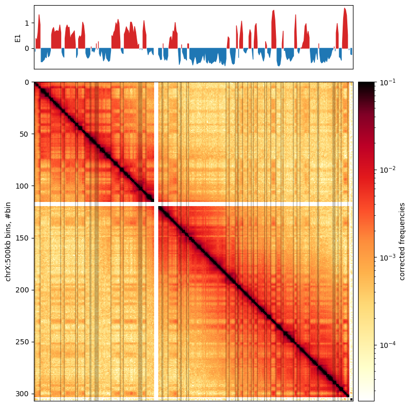
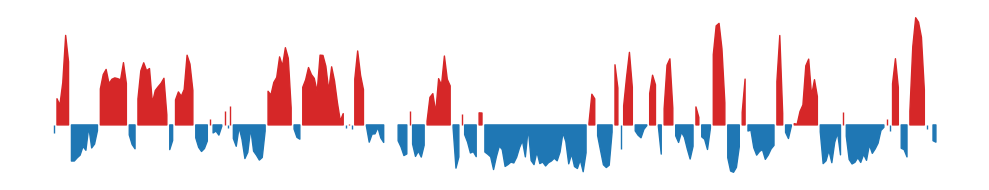
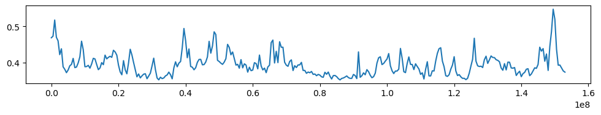

To get an overview of the data accessions used in this analysis, we will first summarize the SRA-runtable.tsv that contains the accession numbers and some metadata for each sample.
Compartments Analysis
Analyses of Chromatin Compartments using the Open2C Ecosystem
Working with coolers
In this notebook, we use files generated by the workflow master_workflow that, in short, does the following:
- Download the data from the source
- Index the reference genome with
bwa indexandsamtools faidx - Align the reads to the reference genome with
bwa mem - Pair and sort the reads to
.pairsfiles withpairtools parse | pairtools sort - Deduplicate the pairs with
pairtools dedup - Convert the .pairs to cooler files with
cooler cload pairs
We will:
- Load the cooler files
- Merge the coolers from the same BioSample ID –> Create ‘replicates’
- Zoomify the merged cooler files (coarsen) to create a multicooler (.mcool) file
- Balance the matrices (use commandline
cooler balance) - Calculate E1 compartments with
cooltools compute_cis_eig
Overview
Data (Accessions)
SRA-runtable.tsv file
| source_name | BioSample | Run | GB | Bases | Reads | |
|---|---|---|---|---|---|---|
| 16 | fibroblast | SAMN08375237 | SRR6502335 | 29.771059 | 73,201,141,800 | 244,003,806 |
| 17 | fibroblast | SAMN08375237 | SRR6502336 | 22.755361 | 65,119,970,100 | 217,066,567 |
| 18 | fibroblast | SAMN08375236 | SRR6502337 | 21.434722 | 52,769,196,300 | 175,897,321 |
| 19 | fibroblast | SAMN08375236 | SRR6502338 | 21.420030 | 52,378,949,100 | 174,596,497 |
| 20 | fibroblast | SAMN08375236 | SRR6502339 | 10.207410 | 28,885,941,600 | 96,286,472 |
| 9 | fibroblast | SAMN08375237 | SRR7349189 | 52.729173 | 139,604,854,200 | 465,349,514 |
| 10 | fibroblast | SAMN08375236 | SRR7349190 | 53.085520 | 142,008,353,400 | 473,361,178 |
| 21 | pachytene spermatocyte | SAMN08375234 | SRR6502342 | 60.258880 | 150,370,993,500 | 501,236,645 |
| 22 | pachytene spermatocyte | SAMN08375234 | SRR6502344 | 27.146048 | 65,697,684,300 | 218,992,281 |
| 23 | pachytene spermatocyte | SAMN08375234 | SRR6502345 | 26.202707 | 63,490,538,700 | 211,635,129 |
| 0 | pachytene spermatocyte | SAMN09427370 | SRR7345458 | 55.970557 | 153,281,577,900 | 510,938,593 |
| 1 | pachytene spermatocyte | SAMN09427370 | SRR7345459 | 53.982492 | 144,993,841,200 | 483,312,804 |
| 11 | pachytene spermatocyte | SAMN08375235 | SRR7349191 | 51.274476 | 137,821,979,100 | 459,406,597 |
| 24 | round spermatid | SAMN08375232 | SRR6502351 | 20.924497 | 55,095,075,300 | 183,650,251 |
| 25 | round spermatid | SAMN08375232 | SRR6502352 | 41.133960 | 115,578,475,800 | 385,261,586 |
| 26 | round spermatid | SAMN08375232 | SRR6502353 | 36.444117 | 96,195,161,400 | 320,650,538 |
| 2 | round spermatid | SAMN09427369 | SRR7345460 | 38.244654 | 104,105,827,200 | 347,019,424 |
| 3 | round spermatid | SAMN09427369 | SRR7345461 | 53.996261 | 144,532,309,500 | 481,774,365 |
| 12 | round spermatid | SAMN08375232 | SRR7349192 | 52.384556 | 140,431,608,000 | 468,105,360 |
| 29 | sperm | SAMN08375229 | SRR6502360 | 26.653940 | 64,752,370,800 | 215,841,236 |
| 30 | sperm | SAMN08375228 | SRR6502362 | 23.973440 | 58,369,232,700 | 194,564,109 |
| 13 | sperm | SAMN08375229 | SRR7349193 | 52.806276 | 141,148,572,300 | 470,495,241 |
| 14 | sperm | SAMN08375229 | SRR7349195 | 22.444378 | 60,523,788,600 | 201,745,962 |
| 15 | sperm | SAMN08375229 | SRR7349196 | 38.253606 | 104,119,671,000 | 347,065,570 |
| 27 | spermatogonia | SAMN08375231 | SRR6502356 | 22.845286 | 58,909,579,800 | 196,365,266 |
| 28 | spermatogonia | SAMN08375231 | SRR6502357 | 17.947471 | 46,888,332,900 | 156,294,443 |
| 4 | spermatogonia | SAMN09427379 | SRR7345462 | 18.686342 | 52,032,780,000 | 173,442,600 |
| 5 | spermatogonia | SAMN09427379 | SRR7345463 | 29.956561 | 82,384,836,000 | 274,616,120 |
| 6 | spermatogonia | SAMN09427379 | SRR7345464 | 39.145759 | 105,153,716,100 | 350,512,387 |
| 7 | spermatogonia | SAMN09427378 | SRR7345465 | 35.816184 | 96,048,594,600 | 320,161,982 |
| 8 | spermatogonia | SAMN09427378 | SRR7345467 | 28.396816 | 77,248,140,900 | 257,493,803 |
| source_name | GB | Bases | Reads | |
|---|---|---|---|---|
| 0 | fibroblast | 211.403275 | 553,968,406,500 | 1,846,561,355 |
| 1 | pachytene spermatocyte | 274.835160 | 715,656,614,700 | 2,385,522,049 |
| 2 | round spermatid | 243.128044 | 655,938,457,200 | 2,186,461,524 |
| 3 | sperm | 164.131640 | 428,913,635,400 | 1,429,712,118 |
| 4 | spermatogonia | 192.794420 | 518,665,980,300 | 1,728,886,601 |
Folder structure
For ease of mind, here is the folder structure of the project. ../steps/bwa/PE/ is the base directory artificially defined in the master_workflow.py. It ccould be any other directory inside steps. It is defined relative to the master_workflow.py file (inside the workdlow), and converted to an absolute path by python.
../steps/bwa/PE
├── bamfiles
│ ├── fibroblast
│ ├── pachytene_spermatocyte
│ ├── round_spermatid
│ ├── sperm
│ └── spermatogonia
├── cool
│ ├── fibroblast
│ ├── pachytene_spermatocyte
│ ├── round_spermatid
│ ├── sperm
│ └── spermatogonia
└── pairs
├── fibroblast
├── pachytene_spermatocyte
├── round_spermatid
├── sperm
└── spermatogonia
18 directoriesFullMerge (pool all from each source_name)
We will use cooler merge to merge all samples in each sub-folder (cell type) to just one interaction matrix for each cell type. The reason for that is that we choose to trust (Wang et al. 2019) when they say that compartments are highly reproducible between replicates, and by merging all replicates, we will have a more robust signal.
Thus, we will merge all samples from the same source_name into a single cooler file.
Overview of this section:
- Locate the coolers (
glob–> dictionary) - Merge the coolers (
cooler.merge_coolers) - Zoomify the merged cooler (
cooler.zoomify_cooler) to resolutions: 10kb, 50kb, 100kb, 500kb. - Balance the matrices (
!cooler balance) (use the CLI, as it is more easily parallelized)
Create cooler dictionary (glob)
First, we will create a dictionary with the paths to the coolers for each sample. We use glob.glob to fetch all the coolers in each sub-folder that remain after filtering and (automatic) quality control (those are the ones with nodups in their names).
import glob
import os.path as op
from pprint import pprint as pp
# Get the list of cell type dirs
base_dir = '../steps/bwa/PE/cool'
folders = glob.glob(op.join(base_dir, '*'))
files_dict = {f:glob.glob(f"{f}/*.nodups.*") for f in folders}
cooler_dict = {op.basename(k): [op.basename(f) for f in v] for k,v in files_dict.items()}
pp(cooler_dict){'fibroblast': ['SRR6502339.nodups.10000.cool',
'SRR7349190.nodups.10000.cool',
'SRR7349189.nodups.10000.cool',
'SRR6502335.nodups.10000.cool',
'SRR6502338.nodups.10000.cool',
'SRR6502336.nodups.10000.cool',
'SRR6502337.nodups.10000.cool'],
'pachytene_spermatocyte': ['SRR7345459.nodups.10000.cool',
'SRR6502344.nodups.10000.cool',
'SRR6502342.nodups.10000.cool',
'SRR7345458.nodups.10000.cool',
'SRR6502345.nodups.10000.cool',
'SRR7349191.nodups.10000.cool'],
'round_spermatid': ['SRR7349192.nodups.10000.cool',
'SRR6502353.nodups.10000.cool',
'SRR6502352.nodups.10000.cool',
'SRR6502351.nodups.10000.cool',
'SRR7345460.nodups.10000.cool',
'SRR7345461.nodups.10000.cool'],
'sperm': ['SRR7349196.nodups.10000.cool',
'SRR6502362.nodups.10000.cool',
'SRR7349193.nodups.10000.cool',
'SRR6502360.nodups.10000.cool',
'SRR7349195.nodups.10000.cool'],
'spermatogonia': ['SRR6502357.nodups.10000.cool',
'SRR7345467.nodups.10000.cool',
'SRR6502356.nodups.10000.cool',
'SRR7345464.nodups.10000.cool',
'SRR7345462.nodups.10000.cool',
'SRR7345465.nodups.10000.cool',
'SRR7345463.nodups.10000.cool']}Merge coolers
The coolers are merged by summing each bin in the matrices, meaning we can only merge matrices with same dimensions. We iterate through the dictionary and merge the coolers with cooler merge. The mergebuf parameter should be adjusted if you don’t have 32G memory. Default: mergebuf = 20000000. Below, we also check if the output file already exists. If it does, we skip the merge.
# NB adjust `mergebuf` if you don't have 32G of RAM
import cooler
for folder,cooler_list in cooler_dict.items():
in_uris = [op.join(base_dir, folder, file) for file in cooler_list]
out_uri = op.join(base_dir, folder, f'{folder}.fullmerge.cool')
if op.exists(out_uri):
print(f"Skipping {out_uri}: exists...")
continue
print(f"Creating {out_uri} by \nMerging {len(cooler_list)} coolers into one:", end=" ")
print("\t",[file.split('.')[0] for file in cooler_list])
cooler.merge_coolers(output_uri=out_uri,
input_uris=in_uris,
mergebuf=int(5e7),
)
print("... Done!")Skipping ../steps/bwa/PE/cool/round_spermatid/round_spermatid.fullmerge.cool: exists...
Skipping ../steps/bwa/PE/cool/spermatogonia/spermatogonia.fullmerge.cool: exists...
Skipping ../steps/bwa/PE/cool/sperm/sperm.fullmerge.cool: exists...
Skipping ../steps/bwa/PE/cool/fibroblast/fibroblast.fullmerge.cool: exists...
Skipping ../steps/bwa/PE/cool/pachytene_spermatocyte/pachytene_spermatocyte.fullmerge.cool: exists...Zoomify the merged cooler files
Here, we zoomify the merged cooler files to resolutions: 10kb, 50kb, 100kb, 500kb.
# NB 8 cores and 32G of RAM was used
import glob
import cooler
import os.path as op
base_dir = '../steps/bwa/PE/cool'
merged_coolers = glob.glob(op.join(base_dir, '*/*.fullmerge.cool'))
for clr in merged_coolers:
out_uri = clr.replace('.fullmerge.cool', '.mcool')
if op.exists(out_uri):
print(f"Skipping {out_uri}: exists...")
continue
print(f"Zoomifying cooler: \n\t {clr}\n\t-> {out_uri}", end="")
cooler.zoomify_cooler(base_uris = clr,
outfile = out_uri,
resolutions = [10000,50000,100000,500000],
chunksize = 10000000,
nproc = 8)
print(" --> done")Skipping ../steps/bwa/PE/cool/round_spermatid/round_spermatid.mcool: exists...
Skipping ../steps/bwa/PE/cool/spermatogonia/spermatogonia.mcool: exists...
Skipping ../steps/bwa/PE/cool/sperm/sperm.mcool: exists...
Zoomifying cooler:
../steps/bwa/PE/cool/fibroblast/fibroblast.fullmerge.cool
-> ../steps/bwa/PE/cool/fibroblast/fibroblast.mcool --> done
Skipping ../steps/bwa/PE/cool/pachytene_spermatocyte/pachytene_spermatocyte.mcool: exists...import glob
mcools = glob.glob("../steps/bwa/PE/cool/*/*.mcool")
for mcool in mcools:
print(f"{mcool}:")
print(cooler.fileops.list_coolers(mcool))
print()
../steps/bwa/PE/cool/round_spermatid/round_spermatid.mcool:
['/resolutions/10000', '/resolutions/50000', '/resolutions/100000', '/resolutions/500000']
../steps/bwa/PE/cool/spermatogonia/spermatogonia.mcool:
['/resolutions/10000', '/resolutions/50000', '/resolutions/100000', '/resolutions/500000']
../steps/bwa/PE/cool/sperm/sperm.mcool:
['/resolutions/10000', '/resolutions/50000', '/resolutions/100000', '/resolutions/500000']
../steps/bwa/PE/cool/fibroblast/fibroblast.mcool:
['/resolutions/10000', '/resolutions/50000', '/resolutions/100000', '/resolutions/500000']
../steps/bwa/PE/cool/pachytene_spermatocyte/pachytene_spermatocyte.mcool:
['/resolutions/10000', '/resolutions/50000', '/resolutions/100000', '/resolutions/500000']
0 chr1
Name: chrom, dtype: category
Categories (22, object): ['chr1' < 'chr2' < 'chr3' < 'chr4' ... 'chr19' < 'chr20' < 'chrX' < 'chrY']0 0
Name: start, dtype: int320 500000
Name: end, dtype: int320 0.002814
Name: weight, dtype: float64Balance the matrices
%capture --no-stdout
import glob
mcools = glob.glob("../steps/bwa/PE/cool/*/*.mcool")
resolutions = [10000, 50000, 100000, 500000]
for mcool in mcools:
print(f"Balancing {mcool}:")
for res in resolutions:
full_name = f"{mcool}::resolutions/{res}"
print(f"\tresolution {res}...", end=" ")
# First, just default values
#!cooler balance -p 32 {full_name}
# With more filtering
!cooler balance -p 32 -c 20000000 --cis-only -n cis_weights {full_name}
print("--> Done!")Balancing ../steps/bwa/PE/cool/round_spermatid/round_spermatid.mcool:
resolution 10000... INFO:cooler.cli.balance:Balancing "../steps/bwa/PE/cool/round_spermatid/round_spermatid.mcool::resolutions/10000"
INFO:cooler.balance:variance is 2079661.4027216053
INFO:cooler.balance:variance is 453553.06527791504
INFO:cooler.balance:variance is 122090.58632047936
INFO:cooler.balance:variance is 129190.84140421994
INFO:cooler.balance:variance is 48191.01921909741
INFO:cooler.balance:variance is 40764.260723976775
INFO:cooler.balance:variance is 18356.248248008043
INFO:cooler.balance:variance is 13507.74990364802
INFO:cooler.balance:variance is 6807.56897366601
INFO:cooler.balance:variance is 4602.949620233886
INFO:cooler.balance:variance is 2481.4615818257016
INFO:cooler.balance:variance is 1594.394282252964
INFO:cooler.balance:variance is 894.8193883950739
INFO:cooler.balance:variance is 557.6097513200839
INFO:cooler.balance:variance is 320.5395715985926
INFO:cooler.balance:variance is 196.1207825649443
INFO:cooler.balance:variance is 114.360455989492
INFO:cooler.balance:variance is 69.20983704916726
INFO:cooler.balance:variance is 40.701663195238446
INFO:cooler.balance:variance is 24.472032570532765
INFO:cooler.balance:variance is 14.464800443947336
INFO:cooler.balance:variance is 8.663243224655139
INFO:cooler.balance:variance is 5.136077178262542
INFO:cooler.balance:variance is 3.0689686912415834
INFO:cooler.balance:variance is 1.8227311404002953
INFO:cooler.balance:variance is 1.0876356471857458
INFO:cooler.balance:variance is 0.6466621996220416
INFO:cooler.balance:variance is 0.38555008168429644
INFO:cooler.balance:variance is 0.2293776232379284
INFO:cooler.balance:variance is 0.13669147465356649
INFO:cooler.balance:variance is 0.08135348118033474
INFO:cooler.balance:variance is 0.048466280530093726
INFO:cooler.balance:variance is 0.02885176157871944
INFO:cooler.balance:variance is 0.01718542784928682
INFO:cooler.balance:variance is 0.010231782639168413
INFO:cooler.balance:variance is 0.00609388612696222
INFO:cooler.balance:variance is 0.0036284405804380727
INFO:cooler.balance:variance is 0.0021609078863241
INFO:cooler.balance:variance is 0.0012867157377500968
INFO:cooler.balance:variance is 0.000766271896733645
INFO:cooler.balance:variance is 0.000456290649742504
INFO:cooler.balance:variance is 0.000271726724574162
INFO:cooler.balance:variance is 0.00016180739177129168
INFO:cooler.balance:variance is 9.635704748080421e-05
INFO:cooler.balance:variance is 5.737911611869424e-05
INFO:cooler.balance:variance is 3.4169262997483374e-05
INFO:cooler.balance:variance is 2.0347384009202282e-05
INFO:cooler.balance:variance is 1.211681096961127e-05
INFO:cooler.balance:variance is 7.2154405187102805e-06
--> Done!
resolution 50000... INFO:cooler.cli.balance:Balancing "../steps/bwa/PE/cool/round_spermatid/round_spermatid.mcool::resolutions/50000"
INFO:cooler.balance:variance is 23715051.788399633
INFO:cooler.balance:variance is 9587615.484821318
INFO:cooler.balance:variance is 2506901.69052377
INFO:cooler.balance:variance is 2490202.6786175943
INFO:cooler.balance:variance is 914697.0341084832
INFO:cooler.balance:variance is 722552.8777210371
INFO:cooler.balance:variance is 320506.1035810594
INFO:cooler.balance:variance is 220802.11194116462
INFO:cooler.balance:variance is 109122.83454572913
INFO:cooler.balance:variance is 69412.43424470197
INFO:cooler.balance:variance is 36495.31748751918
INFO:cooler.balance:variance is 22169.116790904776
INFO:cooler.balance:variance is 12075.855789381112
INFO:cooler.balance:variance is 7143.820928171591
INFO:cooler.balance:variance is 3970.795302176272
INFO:cooler.balance:variance is 2313.6665451446643
INFO:cooler.balance:variance is 1300.9444369499479
INFO:cooler.balance:variance is 751.4698428623118
INFO:cooler.balance:variance is 425.3340683171334
INFO:cooler.balance:variance is 244.47099190785718
INFO:cooler.balance:variance is 138.89257297811258
INFO:cooler.balance:variance is 79.60573861549905
INFO:cooler.balance:variance is 45.32401694919133
INFO:cooler.balance:variance is 25.935227148474347
INFO:cooler.balance:variance is 14.784490535695745
INFO:cooler.balance:variance is 8.45212880649952
INFO:cooler.balance:variance is 4.821546087745567
INFO:cooler.balance:variance is 2.7549678284476977
INFO:cooler.balance:variance is 1.572208954528203
INFO:cooler.balance:variance is 0.8980683651992448
INFO:cooler.balance:variance is 0.5126278599647546
INFO:cooler.balance:variance is 0.2927699442195732
INFO:cooler.balance:variance is 0.1671382553936957
INFO:cooler.balance:variance is 0.09544592915150751
INFO:cooler.balance:variance is 0.05449279496762292
INFO:cooler.balance:variance is 0.031116892889047974
INFO:cooler.balance:variance is 0.017766273378872162
INFO:cooler.balance:variance is 0.010144707907233161
INFO:cooler.balance:variance is 0.005792288604359692
INFO:cooler.balance:variance is 0.003307390256508526
INFO:cooler.balance:variance is 0.001888435259902268
INFO:cooler.balance:variance is 0.0010782831223879019
INFO:cooler.balance:variance is 0.0006156769558235292
INFO:cooler.balance:variance is 0.0003515450696321683
INFO:cooler.balance:variance is 0.00020072573771498175
INFO:cooler.balance:variance is 0.00011461189526818916
INFO:cooler.balance:variance is 6.5441442661249e-05
INFO:cooler.balance:variance is 3.736617561807919e-05
INFO:cooler.balance:variance is 2.1335482079086216e-05
INFO:cooler.balance:variance is 1.2182257166140531e-05
INFO:cooler.balance:variance is 6.955877703132534e-06
--> Done!
resolution 100000... INFO:cooler.cli.balance:Balancing "../steps/bwa/PE/cool/round_spermatid/round_spermatid.mcool::resolutions/100000"
INFO:cooler.balance:variance is 60497905.344961695
INFO:cooler.balance:variance is 34621992.49789496
INFO:cooler.balance:variance is 8927334.258448513
INFO:cooler.balance:variance is 8524481.211809449
INFO:cooler.balance:variance is 3105920.579568889
INFO:cooler.balance:variance is 2355673.1910981555
INFO:cooler.balance:variance is 1035322.3478044458
INFO:cooler.balance:variance is 686403.3433162335
INFO:cooler.balance:variance is 334999.2662678754
INFO:cooler.balance:variance is 205731.95946154604
INFO:cooler.balance:variance is 106455.17145908358
INFO:cooler.balance:variance is 62618.79328173612
INFO:cooler.balance:variance is 33475.397869860026
INFO:cooler.balance:variance is 19221.11122020354
INFO:cooler.balance:variance is 10463.66717701297
INFO:cooler.balance:variance is 5927.6050265636895
INFO:cooler.balance:variance is 3259.682332523258
INFO:cooler.balance:variance is 1832.7485266512251
INFO:cooler.balance:variance is 1013.5470152859881
INFO:cooler.balance:variance is 567.4790152929131
INFO:cooler.balance:variance is 314.8128293753999
INFO:cooler.balance:variance is 175.85032879214742
INFO:cooler.balance:variance is 97.72464125027004
INFO:cooler.balance:variance is 54.51666529996015
INFO:cooler.balance:variance is 30.32581544842157
INFO:cooler.balance:variance is 16.90529045646383
INFO:cooler.balance:variance is 9.408947303931592
INFO:cooler.balance:variance is 5.242949810832167
INFO:cooler.balance:variance is 2.9189394625225566
INFO:cooler.balance:variance is 1.6261552656417484
INFO:cooler.balance:variance is 0.9054914421707447
INFO:cooler.balance:variance is 0.5043904235709779
INFO:cooler.balance:variance is 0.2808858122865027
INFO:cooler.balance:variance is 0.15645230462328624
INFO:cooler.balance:variance is 0.08712997004397402
INFO:cooler.balance:variance is 0.04852916726662521
INFO:cooler.balance:variance is 0.027027199166828775
INFO:cooler.balance:variance is 0.015053133425002377
INFO:cooler.balance:variance is 0.008383630581428353
INFO:cooler.balance:variance is 0.004669310599853651
INFO:cooler.balance:variance is 0.002600530162654482
INFO:cooler.balance:variance is 0.0014483702930882083
INFO:cooler.balance:variance is 0.0008066607342970502
INFO:cooler.balance:variance is 0.0004492695719175469
INFO:cooler.balance:variance is 0.0002502185638808936
INFO:cooler.balance:variance is 0.00013935890028261635
INFO:cooler.balance:variance is 7.761540130791976e-05
INFO:cooler.balance:variance is 4.322774557922796e-05
INFO:cooler.balance:variance is 2.4075546807187287e-05
INFO:cooler.balance:variance is 1.3408819921770884e-05
INFO:cooler.balance:variance is 7.468000539129476e-06
--> Done!
resolution 500000... INFO:cooler.cli.balance:Balancing "../steps/bwa/PE/cool/round_spermatid/round_spermatid.mcool::resolutions/500000"
INFO:cooler.balance:variance is 752097810.1092529
INFO:cooler.balance:variance is 616091810.0783108
INFO:cooler.balance:variance is 151447603.4460279
INFO:cooler.balance:variance is 124595765.53655349
INFO:cooler.balance:variance is 43950655.218647
INFO:cooler.balance:variance is 28714108.330988254
INFO:cooler.balance:variance is 12110748.781926733
INFO:cooler.balance:variance is 6992744.074571425
INFO:cooler.balance:variance is 3229176.7088141437
INFO:cooler.balance:variance is 1749168.555860552
INFO:cooler.balance:variance is 845758.0640346411
INFO:cooler.balance:variance is 443426.8374600871
INFO:cooler.balance:variance is 219464.49580185706
INFO:cooler.balance:variance is 113172.02250178311
INFO:cooler.balance:variance is 56678.329755405095
INFO:cooler.balance:variance is 28982.57741465774
INFO:cooler.balance:variance is 14602.222314954442
INFO:cooler.balance:variance is 7435.071956263811
INFO:cooler.balance:variance is 3757.3993345815275
INFO:cooler.balance:variance is 1909.033816827551
INFO:cooler.balance:variance is 966.2402498413427
INFO:cooler.balance:variance is 490.38236203755054
INFO:cooler.balance:variance is 248.39661103297976
INFO:cooler.balance:variance is 125.99513821225486
INFO:cooler.balance:variance is 63.84643210507502
INFO:cooler.balance:variance is 32.375931739790126
INFO:cooler.balance:variance is 16.409385837722745
INFO:cooler.balance:variance is 8.319857340272586
INFO:cooler.balance:variance is 4.217257692727053
INFO:cooler.balance:variance is 2.13807145554647
INFO:cooler.balance:variance is 1.0838243058802508
INFO:cooler.balance:variance is 0.5494586387521827
INFO:cooler.balance:variance is 0.2785370925254058
INFO:cooler.balance:variance is 0.14120532292445875
INFO:cooler.balance:variance is 0.07158217001928041
INFO:cooler.balance:variance is 0.036288481008308573
INFO:cooler.balance:variance is 0.018396088952525008
INFO:cooler.balance:variance is 0.009325826932954376
INFO:cooler.balance:variance is 0.0047276524600972395
INFO:cooler.balance:variance is 0.0023966595167263165
INFO:cooler.balance:variance is 0.0012149692374305524
INFO:cooler.balance:variance is 0.0006159217556187857
INFO:cooler.balance:variance is 0.00031223736031748124
INFO:cooler.balance:variance is 0.0001582868580206506
INFO:cooler.balance:variance is 8.024248571301605e-05
INFO:cooler.balance:variance is 4.067843426110775e-05
INFO:cooler.balance:variance is 2.0621670399740046e-05
INFO:cooler.balance:variance is 1.045402721372966e-05
INFO:cooler.balance:variance is 5.29960242360679e-06
--> Done!
Balancing ../steps/bwa/PE/cool/spermatogonia/spermatogonia.mcool:
resolution 10000... INFO:cooler.cli.balance:Balancing "../steps/bwa/PE/cool/spermatogonia/spermatogonia.mcool::resolutions/10000"
INFO:cooler.balance:variance is 1308046.8986688335
INFO:cooler.balance:variance is 316673.30240057554
INFO:cooler.balance:variance is 82785.5248728855
INFO:cooler.balance:variance is 78768.27969422366
INFO:cooler.balance:variance is 28056.132700292994
INFO:cooler.balance:variance is 22399.17426980566
INFO:cooler.balance:variance is 9672.539897303917
INFO:cooler.balance:variance is 6839.308546255572
INFO:cooler.balance:variance is 3326.2125837620065
INFO:cooler.balance:variance is 2177.657946649484
INFO:cooler.balance:variance is 1138.6127739458539
INFO:cooler.balance:variance is 711.015655051492
INFO:cooler.balance:variance is 388.3569673740054
INFO:cooler.balance:variance is 235.6899027449793
INFO:cooler.balance:variance is 132.14299968952943
INFO:cooler.balance:variance is 78.84358322685917
INFO:cooler.balance:variance is 44.89793252767011
INFO:cooler.balance:variance is 26.520683012624694
INFO:cooler.balance:variance is 15.242341119779086
INFO:cooler.balance:variance is 8.950563839507556
INFO:cooler.balance:variance is 5.172351848354103
INFO:cooler.balance:variance is 3.026869840291717
INFO:cooler.balance:variance is 1.7548185957552003
INFO:cooler.balance:variance is 1.0248753551646965
INFO:cooler.balance:variance is 0.5953013737100321
INFO:cooler.balance:variance is 0.3472757240874453
INFO:cooler.balance:variance is 0.20194309112705913
INFO:cooler.balance:variance is 0.11772745169053997
INFO:cooler.balance:variance is 0.06850483459787624
INFO:cooler.balance:variance is 0.039921255509448354
INFO:cooler.balance:variance is 0.023239063859600777
INFO:cooler.balance:variance is 0.013539630088010603
INFO:cooler.balance:variance is 0.007883563025672202
INFO:cooler.balance:variance is 0.004592579923071141
INFO:cooler.balance:variance is 0.002674438406769844
INFO:cooler.balance:variance is 0.0015578877775208686
INFO:cooler.balance:variance is 0.0009072935216964874
INFO:cooler.balance:variance is 0.0005284867670857317
INFO:cooler.balance:variance is 0.00030779890628106
INFO:cooler.balance:variance is 0.00017928489663283752
INFO:cooler.balance:variance is 0.0001044213719188654
INFO:cooler.balance:variance is 6.0821992899236746e-05
INFO:cooler.balance:variance is 3.542533486248425e-05
INFO:cooler.balance:variance is 2.063394410509228e-05
INFO:cooler.balance:variance is 1.2018220012279698e-05
INFO:cooler.balance:variance is 7.000141523505563e-06
--> Done!
resolution 50000... INFO:cooler.cli.balance:Balancing "../steps/bwa/PE/cool/spermatogonia/spermatogonia.mcool::resolutions/50000"
INFO:cooler.balance:variance is 12664970.643345702
INFO:cooler.balance:variance is 6119316.049040368
INFO:cooler.balance:variance is 1524725.0734942225
INFO:cooler.balance:variance is 1317383.720278999
INFO:cooler.balance:variance is 457749.7138024568
INFO:cooler.balance:variance is 330139.33925419877
INFO:cooler.balance:variance is 139313.30823029307
INFO:cooler.balance:variance is 89388.48672410581
INFO:cooler.balance:variance is 42212.031890871396
INFO:cooler.balance:variance is 25265.071622190768
INFO:cooler.balance:variance is 12722.676102383617
INFO:cooler.balance:variance is 7315.885090671071
INFO:cooler.balance:variance is 3820.22527127937
INFO:cooler.balance:variance is 2147.590745464749
INFO:cooler.balance:variance is 1144.4874115113412
INFO:cooler.balance:variance is 635.3276839396618
INFO:cooler.balance:variance is 342.44141946240575
INFO:cooler.balance:variance is 188.77786890941866
INFO:cooler.balance:variance is 102.39536334082007
INFO:cooler.balance:variance is 56.23277208013894
INFO:cooler.balance:variance is 30.608372241848254
INFO:cooler.balance:variance is 16.774425152298623
INFO:cooler.balance:variance is 9.148347629937652
INFO:cooler.balance:variance is 5.007964580634879
INFO:cooler.balance:variance is 2.7341659296457403
INFO:cooler.balance:variance is 1.495821063440017
INFO:cooler.balance:variance is 0.8171533830298441
INFO:cooler.balance:variance is 0.4469064129157515
INFO:cooler.balance:variance is 0.24422230597840425
INFO:cooler.balance:variance is 0.13354341430001962
INFO:cooler.balance:variance is 0.07299143420977716
INFO:cooler.balance:variance is 0.03990879849603416
INFO:cooler.balance:variance is 0.021815396811108154
INFO:cooler.balance:variance is 0.011927199439084947
INFO:cooler.balance:variance is 0.0065201584267363475
INFO:cooler.balance:variance is 0.003564694008018788
INFO:cooler.balance:variance is 0.0019487496970339556
INFO:cooler.balance:variance is 0.0010654039205419844
INFO:cooler.balance:variance is 0.000582446510079603
INFO:cooler.balance:variance is 0.0003184279912398374
INFO:cooler.balance:variance is 0.00017408344814996056
INFO:cooler.balance:variance is 9.517242089222104e-05
INFO:cooler.balance:variance is 5.2030727582799864e-05
INFO:cooler.balance:variance is 2.8445446398979426e-05
INFO:cooler.balance:variance is 1.5551166746672267e-05
INFO:cooler.balance:variance is 8.501889337010656e-06
--> Done!
resolution 100000... INFO:cooler.cli.balance:Balancing "../steps/bwa/PE/cool/spermatogonia/spermatogonia.mcool::resolutions/100000"
INFO:cooler.balance:variance is 35417979.414851815
INFO:cooler.balance:variance is 20978398.36316186
INFO:cooler.balance:variance is 5082067.645745064
INFO:cooler.balance:variance is 4117030.0830009854
INFO:cooler.balance:variance is 1407664.1289004453
INFO:cooler.balance:variance is 955052.5352853398
INFO:cooler.balance:variance is 396409.00953044463
INFO:cooler.balance:variance is 240460.57128696173
INFO:cooler.balance:variance is 111211.88522093414
INFO:cooler.balance:variance is 63235.17231681437
INFO:cooler.balance:variance is 31035.646033697943
INFO:cooler.balance:variance is 17022.615961850992
INFO:cooler.balance:variance is 8627.91387797452
INFO:cooler.balance:variance is 4640.384336348682
INFO:cooler.balance:variance is 2392.9907235534715
INFO:cooler.balance:variance is 1273.5562197517847
INFO:cooler.balance:variance is 662.850268163825
INFO:cooler.balance:variance is 350.8027403705651
INFO:cooler.balance:variance is 183.48285521762452
INFO:cooler.balance:variance is 96.81891150271014
INFO:cooler.balance:variance is 50.77238920315966
INFO:cooler.balance:variance is 26.74965195772774
INFO:cooler.balance:variance is 14.047152776124742
INFO:cooler.balance:variance is 7.394789114260982
INFO:cooler.balance:variance is 3.886118782168093
INFO:cooler.balance:variance is 2.0448864673765055
INFO:cooler.balance:variance is 1.0750521479351027
INFO:cooler.balance:variance is 0.5655703446353354
INFO:cooler.balance:variance is 0.29739752741042164
INFO:cooler.balance:variance is 0.15643882466925124
INFO:cooler.balance:variance is 0.08227035258617608
INFO:cooler.balance:variance is 0.0432737640735207
INFO:cooler.balance:variance is 0.022758786269366824
INFO:cooler.balance:variance is 0.011970630555550617
INFO:cooler.balance:variance is 0.0062958606419361825
INFO:cooler.balance:variance is 0.0033114342192394285
INFO:cooler.balance:variance is 0.0017416524731905152
INFO:cooler.balance:variance is 0.0009160495712062265
INFO:cooler.balance:variance is 0.00048180160411278857
INFO:cooler.balance:variance is 0.00025341008612315963
INFO:cooler.balance:variance is 0.00013328315032802725
INFO:cooler.balance:variance is 7.010193004233756e-05
INFO:cooler.balance:variance is 3.687079037920824e-05
INFO:cooler.balance:variance is 1.9392629540567188e-05
INFO:cooler.balance:variance is 1.0199755824066701e-05
INFO:cooler.balance:variance is 5.364679614387041e-06
--> Done!
resolution 500000... INFO:cooler.cli.balance:Balancing "../steps/bwa/PE/cool/spermatogonia/spermatogonia.mcool::resolutions/500000"
INFO:cooler.balance:variance is 502908794.55910784
INFO:cooler.balance:variance is 302885012.9395799
INFO:cooler.balance:variance is 64769841.08097244
INFO:cooler.balance:variance is 39738788.34995444
INFO:cooler.balance:variance is 12477710.26016655
INFO:cooler.balance:variance is 6488039.9554140605
INFO:cooler.balance:variance is 2442496.433927255
INFO:cooler.balance:variance is 1161186.926207534
INFO:cooler.balance:variance is 475560.9205520366
INFO:cooler.balance:variance is 216424.55078923996
INFO:cooler.balance:variance is 92084.54215766255
INFO:cooler.balance:variance is 41066.4536084368
INFO:cooler.balance:variance is 17773.39503533346
INFO:cooler.balance:variance is 7854.067579895398
INFO:cooler.balance:variance is 3424.997246168138
INFO:cooler.balance:variance is 1507.3502280588384
INFO:cooler.balance:variance is 659.5241944600145
INFO:cooler.balance:variance is 289.736727452119
INFO:cooler.balance:variance is 126.95829088056419
INFO:cooler.balance:variance is 55.730295610759974
INFO:cooler.balance:variance is 24.436117555785817
INFO:cooler.balance:variance is 10.722919007547057
INFO:cooler.balance:variance is 4.703047349242043
INFO:cooler.balance:variance is 2.0634562680269304
INFO:cooler.balance:variance is 0.9051431946700886
INFO:cooler.balance:variance is 0.39710483238150596
INFO:cooler.balance:variance is 0.17420154340792685
INFO:cooler.balance:variance is 0.07642366207589198
INFO:cooler.balance:variance is 0.03352631055910466
INFO:cooler.balance:variance is 0.014708096942917404
INFO:cooler.balance:variance is 0.0064523718632841405
INFO:cooler.balance:variance is 0.0028306615682161147
INFO:cooler.balance:variance is 0.0012418041540445696
INFO:cooler.balance:variance is 0.000544779517517622
INFO:cooler.balance:variance is 0.00023899397775345836
INFO:cooler.balance:variance is 0.00010484657661802518
INFO:cooler.balance:variance is 4.599608985809808e-05
INFO:cooler.balance:variance is 2.0178462242009167e-05
INFO:cooler.balance:variance is 8.852275971975331e-06
--> Done!
Balancing ../steps/bwa/PE/cool/sperm/sperm.mcool:
resolution 10000... INFO:cooler.cli.balance:Balancing "../steps/bwa/PE/cool/sperm/sperm.mcool::resolutions/10000"
INFO:cooler.balance:variance is 741858.3253318394
INFO:cooler.balance:variance is 125654.14409759178
INFO:cooler.balance:variance is 29707.895428666514
INFO:cooler.balance:variance is 26308.618812100405
INFO:cooler.balance:variance is 9126.995700064954
INFO:cooler.balance:variance is 6361.814778481835
INFO:cooler.balance:variance is 2686.284798559173
INFO:cooler.balance:variance is 1636.497024370329
INFO:cooler.balance:variance is 765.6520583213421
INFO:cooler.balance:variance is 434.1217240131892
INFO:cooler.balance:variance is 214.3041980711702
INFO:cooler.balance:variance is 116.99534062646569
INFO:cooler.balance:variance is 59.399390573895516
INFO:cooler.balance:variance is 31.789714525994775
INFO:cooler.balance:variance is 16.378852155670593
INFO:cooler.balance:variance is 8.674909436374353
INFO:cooler.balance:variance is 4.504070684761752
INFO:cooler.balance:variance is 2.372576487749128
INFO:cooler.balance:variance is 1.236838088007083
INFO:cooler.balance:variance is 0.6496674692760012
INFO:cooler.balance:variance is 0.3393930711935677
INFO:cooler.balance:variance is 0.17800637363404917
INFO:cooler.balance:variance is 0.09309579192340094
INFO:cooler.balance:variance is 0.04878944758246891
INFO:cooler.balance:variance is 0.025531369470789055
INFO:cooler.balance:variance is 0.013375024478619869
INFO:cooler.balance:variance is 0.00700126236976874
INFO:cooler.balance:variance is 0.0036669555191961374
INFO:cooler.balance:variance is 0.0019198081963679966
INFO:cooler.balance:variance is 0.0010054021765131787
INFO:cooler.balance:variance is 0.0005264162010217427
INFO:cooler.balance:variance is 0.0002756682514123214
INFO:cooler.balance:variance is 0.00014434306022155716
INFO:cooler.balance:variance is 7.558590204617383e-05
INFO:cooler.balance:variance is 3.957860234444607e-05
INFO:cooler.balance:variance is 2.0725207108927694e-05
INFO:cooler.balance:variance is 1.0852358744258687e-05
INFO:cooler.balance:variance is 5.682759487137995e-06
--> Done!
resolution 50000... INFO:cooler.cli.balance:Balancing "../steps/bwa/PE/cool/sperm/sperm.mcool::resolutions/50000"
INFO:cooler.balance:variance is 11226892.111312442
INFO:cooler.balance:variance is 2529665.7059934894
INFO:cooler.balance:variance is 581999.9893026546
INFO:cooler.balance:variance is 472337.4957996669
INFO:cooler.balance:variance is 160916.8113716224
INFO:cooler.balance:variance is 102738.72916850327
INFO:cooler.balance:variance is 42303.55508531462
INFO:cooler.balance:variance is 23790.49695299119
INFO:cooler.balance:variance is 10754.782610265629
INFO:cooler.balance:variance is 5674.121620221377
INFO:cooler.balance:variance is 2686.275368890727
INFO:cooler.balance:variance is 1372.901968646645
INFO:cooler.balance:variance is 664.9952951360676
INFO:cooler.balance:variance is 334.54863270733176
INFO:cooler.balance:variance is 163.89168521364684
INFO:cooler.balance:variance is 81.81033452545914
INFO:cooler.balance:variance is 40.30371761726792
INFO:cooler.balance:variance is 20.041084396155842
INFO:cooler.balance:variance is 9.900772754225764
INFO:cooler.balance:variance is 4.913810025834852
INFO:cooler.balance:variance is 2.43090567547462
INFO:cooler.balance:variance is 1.2053406944852152
INFO:cooler.balance:variance is 0.5967042824060315
INFO:cooler.balance:variance is 0.2957333634754577
INFO:cooler.balance:variance is 0.1464532671647815
INFO:cooler.balance:variance is 0.07256743562122547
INFO:cooler.balance:variance is 0.035943073386419166
INFO:cooler.balance:variance is 0.017807778013246334
INFO:cooler.balance:variance is 0.008821056926579725
INFO:cooler.balance:variance is 0.004370102903910446
INFO:cooler.balance:variance is 0.0021648181404164153
INFO:cooler.balance:variance is 0.0010724599416357206
INFO:cooler.balance:variance is 0.0005312762293403381
INFO:cooler.balance:variance is 0.00026319314873834233
INFO:cooler.balance:variance is 0.00013038233492911421
INFO:cooler.balance:variance is 6.459075409998573e-05
INFO:cooler.balance:variance is 3.199757264582162e-05
INFO:cooler.balance:variance is 1.5851392698324252e-05
INFO:cooler.balance:variance is 7.85263491025088e-06
--> Done!
resolution 100000... INFO:cooler.cli.balance:Balancing "../steps/bwa/PE/cool/sperm/sperm.mcool::resolutions/100000"
INFO:cooler.balance:variance is 26978149.012366746
INFO:cooler.balance:variance is 8900156.94370849
INFO:cooler.balance:variance is 2016627.4174504378
INFO:cooler.balance:variance is 1551364.6412996298
INFO:cooler.balance:variance is 522185.826549854
INFO:cooler.balance:variance is 316195.7758177847
INFO:cooler.balance:variance is 127946.05016421733
INFO:cooler.balance:variance is 68595.88279107968
INFO:cooler.balance:variance is 30298.426967140596
INFO:cooler.balance:variance is 15312.260407260588
INFO:cooler.balance:variance is 7052.450566192081
INFO:cooler.balance:variance is 3464.4487069581824
INFO:cooler.balance:variance is 1627.9182174001055
INFO:cooler.balance:variance is 788.9090050328566
INFO:cooler.balance:variance is 374.27557326339814
INFO:cooler.balance:variance is 180.20523376289722
INFO:cooler.balance:variance is 85.88745006028755
INFO:cooler.balance:variance is 41.225053856778686
INFO:cooler.balance:variance is 19.691676811548774
INFO:cooler.balance:variance is 9.437868113551502
INFO:cooler.balance:variance is 4.512909280544654
INFO:cooler.balance:variance is 2.1614410205498022
INFO:cooler.balance:variance is 1.0340661666257085
INFO:cooler.balance:variance is 0.49509750833033705
INFO:cooler.balance:variance is 0.23692072309544868
INFO:cooler.balance:variance is 0.11341675591170837
INFO:cooler.balance:variance is 0.05428021834383655
INFO:cooler.balance:variance is 0.02598266272898889
INFO:cooler.balance:variance is 0.012435789969899271
INFO:cooler.balance:variance is 0.005952514338789774
INFO:cooler.balance:variance is 0.0028490666047004906
INFO:cooler.balance:variance is 0.0013637122309606209
INFO:cooler.balance:variance is 0.000652726177053505
INFO:cooler.balance:variance is 0.000312426598847558
INFO:cooler.balance:variance is 0.00014954068420420272
INFO:cooler.balance:variance is 7.157723621330367e-05
INFO:cooler.balance:variance is 3.4260038024799415e-05
INFO:cooler.balance:variance is 1.639844988840405e-05
INFO:cooler.balance:variance is 7.849039453995556e-06
--> Done!
resolution 500000... INFO:cooler.cli.balance:Balancing "../steps/bwa/PE/cool/sperm/sperm.mcool::resolutions/500000"
INFO:cooler.balance:variance is 295807137.88910925
INFO:cooler.balance:variance is 147065535.97677138
INFO:cooler.balance:variance is 31558040.255049814
INFO:cooler.balance:variance is 19890269.304988354
INFO:cooler.balance:variance is 6349983.4655896835
INFO:cooler.balance:variance is 3187143.129140095
INFO:cooler.balance:variance is 1195162.4464936242
INFO:cooler.balance:variance is 542271.0324039235
INFO:cooler.balance:variance is 217534.60078393028
INFO:cooler.balance:variance is 94560.20726960694
INFO:cooler.balance:variance is 39026.631537067966
INFO:cooler.balance:variance is 16661.191138130707
INFO:cooler.balance:variance is 6959.364478323574
INFO:cooler.balance:variance is 2948.668468787632
INFO:cooler.balance:variance is 1237.9229952184448
INFO:cooler.balance:variance is 522.8449040589231
INFO:cooler.balance:variance is 219.97583682881836
INFO:cooler.balance:variance is 92.78529788050602
INFO:cooler.balance:variance is 39.07316829430628
INFO:cooler.balance:variance is 16.471897403186045
INFO:cooler.balance:variance is 6.939254403667243
INFO:cooler.balance:variance is 2.924683737405765
INFO:cooler.balance:variance is 1.232312992525181
INFO:cooler.balance:variance is 0.5193338143610416
INFO:cooler.balance:variance is 0.21883678787107338
INFO:cooler.balance:variance is 0.09222093672936361
INFO:cooler.balance:variance is 0.038861282155901095
INFO:cooler.balance:variance is 0.016376453389006302
INFO:cooler.balance:variance is 0.006901025442559217
INFO:cooler.balance:variance is 0.0029081305336677815
INFO:cooler.balance:variance is 0.0012254920082762333
INFO:cooler.balance:variance is 0.0005164281160424181
INFO:cooler.balance:variance is 0.00021762449681160079
INFO:cooler.balance:variance is 9.170793393983562e-05
INFO:cooler.balance:variance is 3.864607967040314e-05
INFO:cooler.balance:variance is 1.628562856899402e-05
INFO:cooler.balance:variance is 6.8628321656597144e-06
--> Done!
Balancing ../steps/bwa/PE/cool/fibroblast/fibroblast.mcool:
resolution 10000... INFO:cooler.cli.balance:Balancing "../steps/bwa/PE/cool/fibroblast/fibroblast.mcool::resolutions/10000"
INFO:cooler.balance:variance is 2243118.7382447985
INFO:cooler.balance:variance is 991747.1270330226
INFO:cooler.balance:variance is 259316.25655305735
INFO:cooler.balance:variance is 297362.15539104934
INFO:cooler.balance:variance is 102962.78773562737
INFO:cooler.balance:variance is 102701.15505492924
INFO:cooler.balance:variance is 43666.08528448372
INFO:cooler.balance:variance is 38199.37739623126
INFO:cooler.balance:variance is 18730.73347933698
INFO:cooler.balance:variance is 14868.41888183261
INFO:cooler.balance:variance is 8024.57046327179
INFO:cooler.balance:variance is 5955.281527207283
INFO:cooler.balance:variance is 3425.2504241500937
INFO:cooler.balance:variance is 2429.1699095430486
INFO:cooler.balance:variance is 1456.9955185049366
INFO:cooler.balance:variance is 1002.5369516783766
INFO:cooler.balance:variance is 618.1013880145684
INFO:cooler.balance:variance is 416.901837877862
INFO:cooler.balance:variance is 261.7159985714534
INFO:cooler.balance:variance is 174.22418275561708
INFO:cooler.balance:variance is 110.67098057074581
INFO:cooler.balance:variance is 73.0437133984367
INFO:cooler.balance:variance is 46.758613700403615
INFO:cooler.balance:variance is 30.688536728391497
INFO:cooler.balance:variance is 19.744512308732116
INFO:cooler.balance:variance is 12.911454912353367
INFO:cooler.balance:variance is 8.33445392717434
INFO:cooler.balance:variance is 5.437195953949247
INFO:cooler.balance:variance is 3.5173239231320452
INFO:cooler.balance:variance is 2.2910847014813087
INFO:cooler.balance:variance is 1.4841911208997762
INFO:cooler.balance:variance is 0.9657953991007048
INFO:cooler.balance:variance is 0.6262294743793554
INFO:cooler.balance:variance is 0.4072381318491516
INFO:cooler.balance:variance is 0.2642155208627828
INFO:cooler.balance:variance is 0.1717482186714724
INFO:cooler.balance:variance is 0.11147395417236386
INFO:cooler.balance:variance is 0.07244204217556938
INFO:cooler.balance:variance is 0.047030994356778696
INFO:cooler.balance:variance is 0.030558107589759093
INFO:cooler.balance:variance is 0.019842376614872696
INFO:cooler.balance:variance is 0.012891038536355119
INFO:cooler.balance:variance is 0.00837150738892597
INFO:cooler.balance:variance is 0.005438350033562759
INFO:cooler.balance:variance is 0.0035319529539791115
INFO:cooler.balance:variance is 0.0022943456242462295
INFO:cooler.balance:variance is 0.001490142303741579
INFO:cooler.balance:variance is 0.0009679641714111494
INFO:cooler.balance:variance is 0.0006286981869746439
INFO:cooler.balance:variance is 0.000408381389160917
INFO:cooler.balance:variance is 0.00026525171318165196
INFO:cooler.balance:variance is 0.00017229673790517122
INFO:cooler.balance:variance is 0.00011191171295225644
INFO:cooler.balance:variance is 7.269279771398023e-05
INFO:cooler.balance:variance is 4.721652868051391e-05
INFO:cooler.balance:variance is 3.066959590871441e-05
INFO:cooler.balance:variance is 1.9921110622070587e-05
INFO:cooler.balance:variance is 1.2939766583058893e-05
INFO:cooler.balance:variance is 8.404925158333893e-06
--> Done!
resolution 50000... INFO:cooler.cli.balance:Balancing "../steps/bwa/PE/cool/fibroblast/fibroblast.mcool::resolutions/50000"
INFO:cooler.balance:variance is 33098650.12736815
INFO:cooler.balance:variance is 18861473.70590618
INFO:cooler.balance:variance is 4706882.272186386
INFO:cooler.balance:variance is 5056251.080239619
INFO:cooler.balance:variance is 1732226.31225507
INFO:cooler.balance:variance is 1591524.2524037405
INFO:cooler.balance:variance is 675725.862301692
INFO:cooler.balance:variance is 542970.3032262143
INFO:cooler.balance:variance is 265117.16505824047
INFO:cooler.balance:variance is 194129.30281686314
INFO:cooler.balance:variance is 103611.1407531792
INFO:cooler.balance:variance is 71384.30110114903
INFO:cooler.balance:variance is 40299.12513092778
INFO:cooler.balance:variance is 26701.007148300923
INFO:cooler.balance:variance is 15614.365401067733
INFO:cooler.balance:variance is 10092.640847951732
INFO:cooler.balance:variance is 6033.701907998682
INFO:cooler.balance:variance is 3839.7159030501757
INFO:cooler.balance:variance is 2327.3842697590917
INFO:cooler.balance:variance is 1466.720347857387
INFO:cooler.balance:variance is 896.7198467733905
INFO:cooler.balance:variance is 561.685522837574
INFO:cooler.balance:variance is 345.25271449991817
INFO:cooler.balance:variance is 215.4415485198332
INFO:cooler.balance:variance is 132.8709251792976
INFO:cooler.balance:variance is 82.7183708577876
INFO:cooler.balance:variance is 51.12243400736155
INFO:cooler.balance:variance is 31.779837309483067
INFO:cooler.balance:variance is 19.66657886496113
INFO:cooler.balance:variance is 12.214578902528666
INFO:cooler.balance:variance is 7.56502432930727
INFO:cooler.balance:variance is 4.695904455075625
INFO:cooler.balance:variance is 2.90986582762248
INFO:cooler.balance:variance is 1.8056509347302994
INFO:cooler.balance:variance is 1.1192484958544657
INFO:cooler.balance:variance is 0.6943788999825237
INFO:cooler.balance:variance is 0.4305033045473406
INFO:cooler.balance:variance is 0.26704899743299676
INFO:cooler.balance:variance is 0.1655868389925652
INFO:cooler.balance:variance is 0.10270851830622812
INFO:cooler.balance:variance is 0.06369069014162039
INFO:cooler.balance:variance is 0.03950354929276463
INFO:cooler.balance:variance is 0.024497824865218596
INFO:cooler.balance:variance is 0.015194113166564159
INFO:cooler.balance:variance is 0.009422815595873709
INFO:cooler.balance:variance is 0.005844147404713019
INFO:cooler.balance:variance is 0.0036243938805720615
INFO:cooler.balance:variance is 0.0022478716546752184
INFO:cooler.balance:variance is 0.001394092034278237
INFO:cooler.balance:variance is 0.0008646195268219724
INFO:cooler.balance:variance is 0.0005362269796344828
INFO:cooler.balance:variance is 0.00033256827258229814
INFO:cooler.balance:variance is 0.00020625611589813352
INFO:cooler.balance:variance is 0.00012791992404197544
INFO:cooler.balance:variance is 7.933517547413656e-05
INFO:cooler.balance:variance is 4.920358259911646e-05
INFO:cooler.balance:variance is 3.051584221673408e-05
INFO:cooler.balance:variance is 1.8925880658521028e-05
INFO:cooler.balance:variance is 1.1737765481087798e-05
INFO:cooler.balance:variance is 7.279743592053885e-06
--> Done!
resolution 100000... INFO:cooler.cli.balance:Balancing "../steps/bwa/PE/cool/fibroblast/fibroblast.mcool::resolutions/100000"
INFO:cooler.balance:variance is 95762729.34928331
INFO:cooler.balance:variance is 61076831.455153994
INFO:cooler.balance:variance is 14830747.465030745
INFO:cooler.balance:variance is 15122278.342628365
INFO:cooler.balance:variance is 5157013.049074703
INFO:cooler.balance:variance is 4445643.853411706
INFO:cooler.balance:variance is 1884098.6260467838
INFO:cooler.balance:variance is 1420554.9772676432
INFO:cooler.balance:variance is 689248.1740502883
INFO:cooler.balance:variance is 475613.5341070679
INFO:cooler.balance:variance is 250664.28814100937
INFO:cooler.balance:variance is 163585.53459444997
INFO:cooler.balance:variance is 90652.19649284013
INFO:cooler.balance:variance is 57159.24871875445
INFO:cooler.balance:variance is 32650.79780667571
INFO:cooler.balance:variance is 20159.773422835788
INFO:cooler.balance:variance is 11728.384556004832
INFO:cooler.balance:variance is 7150.028295973408
INFO:cooler.balance:variance is 4205.774093516145
INFO:cooler.balance:variance is 2544.4066869126173
INFO:cooler.balance:variance is 1506.6253771907323
INFO:cooler.balance:variance is 907.2904975519776
INFO:cooler.balance:variance is 539.3847808311697
INFO:cooler.balance:variance is 323.92342692741084
INFO:cooler.balance:variance is 193.03597409149418
INFO:cooler.balance:variance is 115.73553817267903
INFO:cooler.balance:variance is 69.07028429977203
INFO:cooler.balance:variance is 41.37077525235102
INFO:cooler.balance:variance is 24.711393035696165
INFO:cooler.balance:variance is 14.79266761484528
INFO:cooler.balance:variance is 8.84054386078467
INFO:cooler.balance:variance is 5.2902756683441305
INFO:cooler.balance:variance is 3.1626366384383524
INFO:cooler.balance:variance is 1.8921698104407556
INFO:cooler.balance:variance is 1.1313972518478432
INFO:cooler.balance:variance is 0.6768211393030208
INFO:cooler.balance:variance is 0.40474364883419806
INFO:cooler.balance:variance is 0.24210760683314492
INFO:cooler.balance:variance is 0.14479240485417574
INFO:cooler.balance:variance is 0.0866077045681562
INFO:cooler.balance:variance is 0.05179800437623845
INFO:cooler.balance:variance is 0.03098229814859465
INFO:cooler.balance:variance is 0.01853027839478892
INFO:cooler.balance:variance is 0.011083496394368623
INFO:cooler.balance:variance is 0.006629067422611634
INFO:cooler.balance:variance is 0.0039650079525874425
INFO:cooler.balance:variance is 0.002371506422022685
INFO:cooler.balance:variance is 0.001418450498367986
INFO:cooler.balance:variance is 0.000848393484188623
INFO:cooler.balance:variance is 0.0005074418598329213
INFO:cooler.balance:variance is 0.0003035087933700132
INFO:cooler.balance:variance is 0.00018153476061006293
INFO:cooler.balance:variance is 0.00010857903473919804
INFO:cooler.balance:variance is 6.4943292513953e-05
INFO:cooler.balance:variance is 3.8843759848746485e-05
INFO:cooler.balance:variance is 2.3233226606969482e-05
INFO:cooler.balance:variance is 1.3896230223045618e-05
INFO:cooler.balance:variance is 8.311612290465695e-06
--> Done!
resolution 500000... INFO:cooler.cli.balance:Balancing "../steps/bwa/PE/cool/fibroblast/fibroblast.mcool::resolutions/500000"
INFO:cooler.balance:variance is 1263029871.4028523
INFO:cooler.balance:variance is 713041615.7020518
INFO:cooler.balance:variance is 155459168.18479806
INFO:cooler.balance:variance is 120278348.19536278
INFO:cooler.balance:variance is 39400048.456381015
INFO:cooler.balance:variance is 25341702.48208014
INFO:cooler.balance:variance is 10236908.14941692
INFO:cooler.balance:variance is 5861237.265242753
INFO:cooler.balance:variance is 2635567.014828291
INFO:cooler.balance:variance is 1415968.571919777
INFO:cooler.balance:variance is 672291.4270227149
INFO:cooler.balance:variance is 349341.9293198957
INFO:cooler.balance:variance is 170491.7031776903
INFO:cooler.balance:variance is 87087.79818905548
INFO:cooler.balance:variance is 43097.219213253054
INFO:cooler.balance:variance is 21823.669277186564
INFO:cooler.balance:variance is 10876.110953072413
INFO:cooler.balance:variance is 5483.416832221197
INFO:cooler.balance:variance is 2742.4813595640435
INFO:cooler.balance:variance is 1379.6551287130035
INFO:cooler.balance:variance is 691.2707283828129
INFO:cooler.balance:variance is 347.3781850937816
INFO:cooler.balance:variance is 174.21289833852526
INFO:cooler.balance:variance is 87.49870459095322
INFO:cooler.balance:variance is 43.902003566759035
INFO:cooler.balance:variance is 22.044070235766075
INFO:cooler.balance:variance is 11.063185697240737
INFO:cooler.balance:variance is 5.5543434789971435
INFO:cooler.balance:variance is 2.787893318470167
INFO:cooler.balance:variance is 1.3995960250779331
INFO:cooler.balance:variance is 0.7025464959204487
INFO:cooler.balance:variance is 0.3526871907124563
INFO:cooler.balance:variance is 0.17704249565441085
INFO:cooler.balance:variance is 0.08887649483283891
INFO:cooler.balance:variance is 0.04461523276604731
INFO:cooler.balance:variance is 0.02239703226666938
INFO:cooler.balance:variance is 0.011243237652625441
INFO:cooler.balance:variance is 0.005644143306841245
INFO:cooler.balance:variance is 0.0028333589950725762
INFO:cooler.balance:variance is 0.001422355546012453
INFO:cooler.balance:variance is 0.0007140247985879804
INFO:cooler.balance:variance is 0.00035844292003720646
INFO:cooler.balance:variance is 0.00017993931562735287
INFO:cooler.balance:variance is 9.033020102705829e-05
INFO:cooler.balance:variance is 4.5346065396008476e-05
INFO:cooler.balance:variance is 2.276390232581904e-05
INFO:cooler.balance:variance is 1.1427565283906855e-05
INFO:cooler.balance:variance is 5.736684616241224e-06
--> Done!
Balancing ../steps/bwa/PE/cool/pachytene_spermatocyte/pachytene_spermatocyte.mcool:
resolution 10000... INFO:cooler.cli.balance:Balancing "../steps/bwa/PE/cool/pachytene_spermatocyte/pachytene_spermatocyte.mcool::resolutions/10000"
INFO:cooler.balance:variance is 2259035.2579729445
INFO:cooler.balance:variance is 862660.4307984081
INFO:cooler.balance:variance is 250327.04099481337
INFO:cooler.balance:variance is 406382.6280304705
INFO:cooler.balance:variance is 150013.8890621128
INFO:cooler.balance:variance is 201040.05651255383
INFO:cooler.balance:variance is 88584.40036468355
INFO:cooler.balance:variance is 101622.17951879876
INFO:cooler.balance:variance is 51134.30170765518
INFO:cooler.balance:variance is 52164.477419668634
INFO:cooler.balance:variance is 28977.910886383866
INFO:cooler.balance:variance is 27097.454813591165
INFO:cooler.balance:variance is 16199.113698563177
INFO:cooler.balance:variance is 14206.413809249761
INFO:cooler.balance:variance is 8966.201299516742
INFO:cooler.balance:variance is 7500.764350758503
INFO:cooler.balance:variance is 4927.310220243256
INFO:cooler.balance:variance is 3981.5157030759005
INFO:cooler.balance:variance is 2693.736241758525
INFO:cooler.balance:variance is 2121.9506854016436
INFO:cooler.balance:variance is 1467.110150317689
INFO:cooler.balance:variance is 1134.2892880066738
INFO:cooler.balance:variance is 796.8546510267557
INFO:cooler.balance:variance is 607.6864497622404
INFO:cooler.balance:variance is 431.94361970524625
INFO:cooler.balance:variance is 326.1005562253113
INFO:cooler.balance:variance is 233.79801950386639
INFO:cooler.balance:variance is 175.20750668366983
INFO:cooler.balance:variance is 126.41273873998765
INFO:cooler.balance:variance is 94.2202318840865
INFO:cooler.balance:variance is 68.29696045544898
INFO:cooler.balance:variance is 50.70176977355159
INFO:cooler.balance:variance is 36.87764743579143
INFO:cooler.balance:variance is 27.296919868826205
INFO:cooler.balance:variance is 19.904108419276437
INFO:cooler.balance:variance is 14.701436594018055
INFO:cooler.balance:variance is 10.739610888069826
INFO:cooler.balance:variance is 7.9199108074436975
INFO:cooler.balance:variance is 5.793436849874688
INFO:cooler.balance:variance is 4.267414827864594
INFO:cooler.balance:variance is 3.124726655072868
INFO:cooler.balance:variance is 2.2997000036899973
INFO:cooler.balance:variance is 1.6851360181855328
INFO:cooler.balance:variance is 1.2394324697348535
INFO:cooler.balance:variance is 0.9086970437848186
INFO:cooler.balance:variance is 0.6680483047314373
INFO:cooler.balance:variance is 0.4899759957636673
INFO:cooler.balance:variance is 0.36009519610775675
INFO:cooler.balance:variance is 0.2641858761777497
INFO:cooler.balance:variance is 0.19410858950408966
INFO:cooler.balance:variance is 0.14243904225290555
INFO:cooler.balance:variance is 0.10463702203865335
INFO:cooler.balance:variance is 0.07679575763162953
INFO:cooler.balance:variance is 0.05640734703739417
INFO:cooler.balance:variance is 0.041403508357366677
INFO:cooler.balance:variance is 0.030408366383655402
INFO:cooler.balance:variance is 0.022321891038197296
INFO:cooler.balance:variance is 0.01639289759975234
INFO:cooler.balance:variance is 0.012034287035015587
INFO:cooler.balance:variance is 0.008837352872941892
INFO:cooler.balance:variance is 0.006487934755384124
INFO:cooler.balance:variance is 0.004764216425740425
INFO:cooler.balance:variance is 0.0034977613771051777
INFO:cooler.balance:variance is 0.002568401024039522
INFO:cooler.balance:variance is 0.0018856978973954277
INFO:cooler.balance:variance is 0.0013846362717872865
INFO:cooler.balance:variance is 0.0010166062132771095
INFO:cooler.balance:variance is 0.0007464654100640905
INFO:cooler.balance:variance is 0.0005480654826329996
INFO:cooler.balance:variance is 0.0004024245712191185
INFO:cooler.balance:variance is 0.00029546867414217775
INFO:cooler.balance:variance is 0.00021695011892046702
INFO:cooler.balance:variance is 0.000159290517333741
INFO:cooler.balance:variance is 0.00011695956275391548
INFO:cooler.balance:variance is 8.587525217595095e-05
INFO:cooler.balance:variance is 6.30538926913886e-05
INFO:cooler.balance:variance is 4.629625393001586e-05
INFO:cooler.balance:variance is 3.399290717390147e-05
INFO:cooler.balance:variance is 2.4958786975855485e-05
INFO:cooler.balance:variance is 1.8325882085958815e-05
INFO:cooler.balance:variance is 1.3455534314563483e-05
INFO:cooler.balance:variance is 9.879650822684964e-06
--> Done!
resolution 50000... INFO:cooler.cli.balance:Balancing "../steps/bwa/PE/cool/pachytene_spermatocyte/pachytene_spermatocyte.mcool::resolutions/50000"
INFO:cooler.balance:variance is 18431848.298031054
INFO:cooler.balance:variance is 17447671.849013276
INFO:cooler.balance:variance is 4981344.05431578
INFO:cooler.balance:variance is 7693287.105934558
INFO:cooler.balance:variance is 2838726.4255396393
INFO:cooler.balance:variance is 3576316.9968233746
INFO:cooler.balance:variance is 1585495.623638183
INFO:cooler.balance:variance is 1703746.0556875316
INFO:cooler.balance:variance is 863398.1117170398
INFO:cooler.balance:variance is 825978.1989153951
INFO:cooler.balance:variance is 461127.79159515153
INFO:cooler.balance:variance is 405736.014310267
INFO:cooler.balance:variance is 242874.60519403912
INFO:cooler.balance:variance is 201273.7695367369
INFO:cooler.balance:variance is 126668.53470854613
INFO:cooler.balance:variance is 100573.43846005795
INFO:cooler.balance:variance is 65605.83323716617
INFO:cooler.balance:variance is 50522.49624256342
INFO:cooler.balance:variance is 33813.46430959407
INFO:cooler.balance:variance is 25477.694111100456
INFO:cooler.balance:variance is 17367.322716809605
INFO:cooler.balance:variance is 12883.816008011141
INFO:cooler.balance:variance is 8898.363836406606
INFO:cooler.balance:variance is 6528.2854864242845
INFO:cooler.balance:variance is 4551.249999195831
INFO:cooler.balance:variance is 3312.6726107340996
INFO:cooler.balance:variance is 2324.947925672288
INFO:cooler.balance:variance is 1682.6958210843459
INFO:cooler.balance:variance is 1186.6233597877042
INFO:cooler.balance:variance is 855.3683200754018
INFO:cooler.balance:variance is 605.2570602842542
INFO:cooler.balance:variance is 435.04066530126056
INFO:cooler.balance:variance is 308.58336062896547
INFO:cooler.balance:variance is 221.34530046582938
INFO:cooler.balance:variance is 157.27750120616236
INFO:cooler.balance:variance is 112.64910181686078
INFO:cooler.balance:variance is 80.14231708344705
INFO:cooler.balance:variance is 57.34145309739457
INFO:cooler.balance:variance is 40.83068946039579
INFO:cooler.balance:variance is 29.192365876690122
INFO:cooler.balance:variance is 20.799900362644202
INFO:cooler.balance:variance is 14.863204902438035
INFO:cooler.balance:variance is 10.594974687543148
INFO:cooler.balance:variance is 7.568085378615812
INFO:cooler.balance:variance is 5.396510124041308
INFO:cooler.balance:variance is 3.8537298590445253
INFO:cooler.balance:variance is 2.7485763415856677
INFO:cooler.balance:variance is 1.9624201326615418
INFO:cooler.balance:variance is 1.399876032539985
INFO:cooler.balance:variance is 0.9993411230574059
INFO:cooler.balance:variance is 0.7129548878919737
INFO:cooler.balance:variance is 0.5089128419429257
INFO:cooler.balance:variance is 0.36310136872476706
INFO:cooler.balance:variance is 0.2591663940838513
INFO:cooler.balance:variance is 0.18492217138142833
INFO:cooler.balance:variance is 0.13198299419526735
INFO:cooler.balance:variance is 0.09417740124469144
INFO:cooler.balance:variance is 0.06721406036876992
INFO:cooler.balance:variance is 0.0479625215897152
INFO:cooler.balance:variance is 0.03422979758887808
INFO:cooler.balance:variance is 0.024426182158008933
INFO:cooler.balance:variance is 0.017432111261062637
INFO:cooler.balance:variance is 0.012439643853501497
INFO:cooler.balance:variance is 0.008877622797358035
INFO:cooler.balance:variance is 0.0063351867998939
INFO:cooler.balance:variance is 0.004521100179079953
INFO:cooler.balance:variance is 0.0032263410781954915
INFO:cooler.balance:variance is 0.0023024600444497972
INFO:cooler.balance:variance is 0.001643087469795459
INFO:cooler.balance:variance is 0.0011725745203987215
INFO:cooler.balance:variance is 0.0008367789972726538
INFO:cooler.balance:variance is 0.0005971577504135824
INFO:cooler.balance:variance is 0.0004261481731548678
INFO:cooler.balance:variance is 0.00030411503137932696
INFO:cooler.balance:variance is 0.00021702528171900417
INFO:cooler.balance:variance is 0.00015487696764933953
INFO:cooler.balance:variance is 0.0001105248439641671
INFO:cooler.balance:variance is 7.887436676642943e-05
INFO:cooler.balance:variance is 5.628716944850075e-05
INFO:cooler.balance:variance is 4.016844357520983e-05
INFO:cooler.balance:variance is 2.8665455667531923e-05
INFO:cooler.balance:variance is 2.0456633899571525e-05
INFO:cooler.balance:variance is 1.4598500457332114e-05
INFO:cooler.balance:variance is 1.041797658945766e-05
INFO:cooler.balance:variance is 7.434600142721613e-06
--> Done!
resolution 100000... INFO:cooler.cli.balance:Balancing "../steps/bwa/PE/cool/pachytene_spermatocyte/pachytene_spermatocyte.mcool::resolutions/100000"
INFO:cooler.balance:variance is 53616608.142429814
INFO:cooler.balance:variance is 62270240.87549858
INFO:cooler.balance:variance is 17673584.536443096
INFO:cooler.balance:variance is 26540910.062633596
INFO:cooler.balance:variance is 9793931.507898387
INFO:cooler.balance:variance is 11936280.982396986
INFO:cooler.balance:variance is 5305360.820377936
INFO:cooler.balance:variance is 5510844.229498362
INFO:cooler.balance:variance is 2799768.25823349
INFO:cooler.balance:variance is 2592147.1300255563
INFO:cooler.balance:variance is 1448669.2782955666
INFO:cooler.balance:variance is 1236163.0897219577
INFO:cooler.balance:variance is 739186.0340420571
INFO:cooler.balance:variance is 595482.2457245848
INFO:cooler.balance:variance is 373514.62111090764
INFO:cooler.balance:variance is 288956.4223052109
INFO:cooler.balance:variance is 187463.75001945812
INFO:cooler.balance:variance is 140952.27381906184
INFO:cooler.balance:variance is 93643.23451826241
INFO:cooler.balance:variance is 69013.73704575999
INFO:cooler.balance:variance is 46623.49245950063
INFO:cooler.balance:variance is 33880.677166747766
INFO:cooler.balance:variance is 23159.716369041696
INFO:cooler.balance:variance is 16664.21656971125
INFO:cooler.balance:variance is 11485.812878165652
INFO:cooler.balance:variance is 8207.186707568459
INFO:cooler.balance:variance is 5689.835933978325
INFO:cooler.balance:variance is 4045.8557009680217
INFO:cooler.balance:variance is 2816.3960565648817
INFO:cooler.balance:variance is 1995.7814169375108
INFO:cooler.balance:variance is 1393.3052225559989
INFO:cooler.balance:variance is 984.9569914127245
INFO:cooler.balance:variance is 689.0159400361586
INFO:cooler.balance:variance is 486.2543421662657
INFO:cooler.balance:variance is 340.638079209245
INFO:cooler.balance:variance is 240.10961643487337
INFO:cooler.balance:variance is 168.37339249965183
INFO:cooler.balance:variance is 118.58392572852415
INFO:cooler.balance:variance is 83.21372155793466
INFO:cooler.balance:variance is 58.572189344967796
INFO:cooler.balance:variance is 41.122084170481855
INFO:cooler.balance:variance is 28.93288871373499
INFO:cooler.balance:variance is 20.320119460282545
INFO:cooler.balance:variance is 14.292774189255743
INFO:cooler.balance:variance is 10.040538139727042
INFO:cooler.balance:variance is 7.060873285877933
INFO:cooler.balance:variance is 4.961047452113731
INFO:cooler.balance:variance is 3.4882881919217574
INFO:cooler.balance:variance is 2.4512053215719316
INFO:cooler.balance:variance is 1.7233550903080506
INFO:cooler.balance:variance is 1.2110969616475535
INFO:cooler.balance:variance is 0.8514186137929988
INFO:cooler.balance:variance is 0.5983746102758688
INFO:cooler.balance:variance is 0.42064496610775565
INFO:cooler.balance:variance is 0.2956404806488803
INFO:cooler.balance:variance is 0.20782184400752798
INFO:cooler.balance:variance is 0.1460670239629719
INFO:cooler.balance:variance is 0.1026759571729071
INFO:cooler.balance:variance is 0.0721670133397838
INFO:cooler.balance:variance is 0.05072800465040654
INFO:cooler.balance:variance is 0.03565529776827899
INFO:cooler.balance:variance is 0.025062698035080534
INFO:cooler.balance:variance is 0.017616050579021866
INFO:cooler.balance:variance is 0.012382506977478764
INFO:cooler.balance:variance is 0.008703469839450206
INFO:cooler.balance:variance is 0.00611772352079245
INFO:cooler.balance:variance is 0.004300073575113891
INFO:cooler.balance:variance is 0.0030225358824295433
INFO:cooler.balance:variance is 0.002124511310476646
INFO:cooler.balance:variance is 0.0014933215559001201
INFO:cooler.balance:variance is 0.0010496439331096595
INFO:cooler.balance:variance is 0.0007377944402278002
INFO:cooler.balance:variance is 0.000518590797232676
INFO:cooler.balance:variance is 0.00036451679698182304
INFO:cooler.balance:variance is 0.00025621674422765815
INFO:cooler.balance:variance is 0.00018009423023698608
INFO:cooler.balance:variance is 0.0001265873004781543
INFO:cooler.balance:variance is 8.897789232968615e-05
INFO:cooler.balance:variance is 6.254213717821953e-05
INFO:cooler.balance:variance is 4.3960687094673345e-05
INFO:cooler.balance:variance is 3.089977102815868e-05
INFO:cooler.balance:variance is 2.1719351774475946e-05
INFO:cooler.balance:variance is 1.5266440157551614e-05
INFO:cooler.balance:variance is 1.0730730017598774e-05
INFO:cooler.balance:variance is 7.542586167459442e-06
--> Done!
resolution 500000... INFO:cooler.cli.balance:Balancing "../steps/bwa/PE/cool/pachytene_spermatocyte/pachytene_spermatocyte.mcool::resolutions/500000"
INFO:cooler.balance:variance is 834280253.4737167
INFO:cooler.balance:variance is 1061416258.2212846
INFO:cooler.balance:variance is 292880402.39824384
INFO:cooler.balance:variance is 385071108.6814928
INFO:cooler.balance:variance is 141703015.0753609
INFO:cooler.balance:variance is 150124311.50685197
INFO:cooler.balance:variance is 67023391.70471464
INFO:cooler.balance:variance is 60602333.346214965
INFO:cooler.balance:variance is 30831881.977075275
INFO:cooler.balance:variance is 25034554.17668421
INFO:cooler.balance:variance is 13897395.760384617
INFO:cooler.balance:variance is 10504594.83095645
INFO:cooler.balance:variance is 6178752.087875902
INFO:cooler.balance:variance is 4454457.137107904
INFO:cooler.balance:variance is 2722245.574047635
INFO:cooler.balance:variance is 1902271.6825734612
INFO:cooler.balance:variance is 1192245.60600815
INFO:cooler.balance:variance is 816184.5116627672
INFO:cooler.balance:variance is 520123.12105649576
INFO:cooler.balance:variance is 351281.54170832597
INFO:cooler.balance:variance is 226324.7993936284
INFO:cooler.balance:variance is 151501.0941272102
INFO:cooler.balance:variance is 98316.45322067304
INFO:cooler.balance:variance is 65428.351117088554
INFO:cooler.balance:variance is 42661.809420574355
INFO:cooler.balance:variance is 28281.66920854915
INFO:cooler.balance:variance is 18498.482655117874
INFO:cooler.balance:variance is 12232.079570857899
INFO:cooler.balance:variance is 8017.241440998923
INFO:cooler.balance:variance is 5292.541467311659
INFO:cooler.balance:variance is 3473.5775941885627
INFO:cooler.balance:variance is 2290.54753530696
INFO:cooler.balance:variance is 1504.6622816771903
INFO:cooler.balance:variance is 991.4879787898274
INFO:cooler.balance:variance is 651.6911714977425
INFO:cooler.balance:variance is 429.2237139989607
INFO:cooler.balance:variance is 282.23162024641846
INFO:cooler.balance:variance is 185.82820143817116
INFO:cooler.balance:variance is 122.220443528926
INFO:cooler.balance:variance is 80.4563585718504
INFO:cooler.balance:variance is 52.92552396318983
INFO:cooler.balance:variance is 34.83556275320123
INFO:cooler.balance:variance is 22.917929124955013
INFO:cooler.balance:variance is 15.083228472460018
INFO:cooler.balance:variance is 9.923806100100139
INFO:cooler.balance:variance is 6.530880300978679
INFO:cooler.balance:variance is 4.297108892552986
INFO:cooler.balance:variance is 2.82782835043848
INFO:cooler.balance:variance is 1.8606782621639915
INFO:cooler.balance:variance is 1.2244383807497863
INFO:cooler.balance:variance is 0.8056828629215431
INFO:cooler.balance:variance is 0.5301789926107803
INFO:cooler.balance:variance is 0.3488635518806641
INFO:cooler.balance:variance is 0.2295668682310631
INFO:cooler.balance:variance is 0.15105884800587205
INFO:cooler.balance:variance is 0.09940234632879694
INFO:cooler.balance:variance is 0.06540879452938436
INFO:cooler.balance:variance is 0.043041217112726
INFO:cooler.balance:variance is 0.02832211824549304
INFO:cooler.balance:variance is 0.018636861113787605
INFO:cooler.balance:variance is 0.012263517668078972
INFO:cooler.balance:variance is 0.008069770845208508
INFO:cooler.balance:variance is 0.005310118604675879
INFO:cooler.balance:variance is 0.0034942162028774554
INFO:cooler.balance:variance is 0.002299287459075082
INFO:cooler.balance:variance is 0.0015129982807701346
INFO:cooler.balance:variance is 0.0009955939447996328
INFO:cooler.balance:variance is 0.0006551294990723688
INFO:cooler.balance:variance is 0.0004310932018127833
INFO:cooler.balance:variance is 0.0002836716370018215
INFO:cooler.balance:variance is 0.00018666378601855788
INFO:cooler.balance:variance is 0.0001228300703023587
INFO:cooler.balance:variance is 8.082560151970415e-05
INFO:cooler.balance:variance is 5.318553136687267e-05
INFO:cooler.balance:variance is 3.499756319916865e-05
INFO:cooler.balance:variance is 2.3029383703449055e-05
INFO:cooler.balance:variance is 1.5153978220299725e-05
INFO:cooler.balance:variance is 9.971744383977664e-06
--> Done!RepMerge (pool all from each BioSample ID)
Merge into the original ‘replicates’
#df.groupby(['source_name','BioSample'])['Reads'].sum()# from pprintpp import pprint as pp
# grouped_df = df.groupby(['source_name','BioSample'])
# # Initialize an empty dictionary
# rep_dict = {}
# # Iterate over each group
# for (source_name, BioSample), group in grouped_df:
# # Extract the 'Run' column and convert it to a list
# run_list = group['Run'].tolist()
# # Populate the nested dictionary
# if source_name not in rep_dict:
# rep_dict[source_name] = {}
# rep_dict[source_name][BioSample] = run_list
# pp(rep_dict)# for source_name, BioSample_dict in rep_dict.items():
# print(f"source_name: {source_name}")
# print(f"Changing working dir: {source_name}/")
# for BioSample, run_list in BioSample_dict.items():
# print(f"Merging samples for BioSample: {BioSample}: {run_list}")Plotting
500kb resolution
Example with a single sample
Imports
# import standard python libraries
import numpy as np
import matplotlib.pyplot as plt
%matplotlib inline
import pandas as pd
import os, subprocess# Import python package for working with cooler files and tools for analysis
import cooler
import cooltools.lib.plotting
import cooltoolsLoad cooler
cool_file = "../steps/bwa/PE/cool/fibroblast/fibroblast.mcool"
clr = cooler.Cooler(f"{cool_file}::resolutions/500000")Calculate gc covariance (from the reference genome)
import bioframe
import os
bins = clr.bins()[:]
rheMac10 = bioframe.load_fasta('../data/links/ucsc_ref/rheMac10.fa')
gc_cov_csv = '../steps/rheMac10_gc_cov_500kb.tsv'
if not os.path.exists(gc_cov_csv):
print('Calculate the fraction of GC basepairs for each bin')
gc_cov = bioframe.frac_gc(bins[['chrom', 'start', 'end']], rheMac10)
gc_cov.to_csv(gc_cov_csv, index=False, sep='\t')
display(gc_cov)
else:
print("Already exists, just read from file:")
gc_cov = pd.read_csv(gc_cov_csv, sep='\t')
display(gc_cov)Already exists, just read from file:| chrom | start | end | GC | |
|---|---|---|---|---|
| 0 | chr1 | 0 | 500000 | 0.424508 |
| 1 | chr1 | 500000 | 1000000 | 0.378836 |
| 2 | chr1 | 1000000 | 1500000 | 0.388272 |
| 3 | chr1 | 1500000 | 2000000 | 0.445226 |
| 4 | chr1 | 2000000 | 2500000 | 0.439485 |
| ... | ... | ... | ... | ... |
| 5715 | chrY | 9500000 | 10000000 | 0.399518 |
| 5716 | chrY | 10000000 | 10500000 | 0.396028 |
| 5717 | chrY | 10500000 | 11000000 | 0.395280 |
| 5718 | chrY | 11000000 | 11500000 | 0.382006 |
| 5719 | chrY | 11500000 | 11753682 | NaN |
5720 rows × 4 columns
# Apparently, we have som NaN values, I don't know why (and only 1 on the X)
gc_cov[gc_cov['GC'].isna()].groupby('chrom').size()chrom
chr1 1
chr10 1
chr11 1
chr12 1
chr13 1
chr14 1
chr15 1
chr16 1
chr17 1
chr18 1
chr19 1
chr2 1
chr20 1
chr3 1
chr4 1
chr5 1
chr6 1
chr7 1
chr8 1
chr9 1
chrY 1
dtype: int64# Make the full view frame
view_df = pd.DataFrame(
{
'chrom': clr.chromnames,
'start': 0,
'end': clr.chromsizes.values,
'name': clr.chromnames
}
)
#display(view_df)# obtain first 3 eigenvectors
cis_eigs = cooltools.eigs_cis(
clr,
gc_cov,
view_df=view_df,
n_eigs=3,
)
# cis_eigs[0] returns eigenvalues, here we focus on eigenvectors
eigenvector_track = cis_eigs[1][['chrom','start','end','E1']]
len(eigenvector_track)5720# full track
eigenvector_track| chrom | start | end | E1 | |
|---|---|---|---|---|
| 0 | chr1 | 0 | 500000 | -0.756052 |
| 1 | chr1 | 500000 | 1000000 | -1.001063 |
| 2 | chr1 | 1000000 | 1500000 | -0.928042 |
| 3 | chr1 | 1500000 | 2000000 | -0.507579 |
| 4 | chr1 | 2000000 | 2500000 | 0.123708 |
| ... | ... | ... | ... | ... |
| 5715 | chrY | 9500000 | 10000000 | -0.499798 |
| 5716 | chrY | 10000000 | 10500000 | -0.588820 |
| 5717 | chrY | 10500000 | 11000000 | -0.988677 |
| 5718 | chrY | 11000000 | 11500000 | -0.566585 |
| 5719 | chrY | 11500000 | 11753682 | NaN |
5720 rows × 4 columns
# subset the chrX
eigenvector_track_chrX = eigenvector_track.loc[eigenvector_track['chrom'] == 'chrX']
nbins = len(eigenvector_track_chrX)
eigenvector_track_chrX
e1X_values = eigenvector_track_chrX['E1'].values# Where does the E1 change sign
np.where(np.diff( (cis_eigs[1][cis_eigs[1]['chrom']=='chrX']['E1']>0).astype(int)))[0]array([ 1, 6, 16, 26, 29, 40, 42, 49, 54, 55, 59, 60, 61,
62, 74, 83, 86, 101, 102, 103, 104, 108, 123, 124, 129, 138,
141, 142, 147, 149, 185, 188, 194, 196, 197, 201, 206, 209, 211,
215, 222, 224, 228, 233, 238, 240, 250, 253, 256, 265, 273, 274,
288, 289, 290, 293, 296, 302])Plot E1 and matrix
%%capture chrX_matrix_e1_500kb
from matplotlib.colors import LogNorm
from mpl_toolkits.axes_grid1 import make_axes_locatable
f, ax = plt.subplots(
figsize=(15, 10),
)
norm = LogNorm(vmax=0.1)
im = ax.matshow(
clr.matrix().fetch('chrX'),
norm=norm,
cmap='fall',
);
plt.axis([0,nbins,nbins,0])
divider = make_axes_locatable(ax)
cax = divider.append_axes("right", size="5%", pad=0.05)
plt.colorbar(im, cax=cax, label='corrected frequencies');
ax.set_ylabel('chrX:500kb bins, #bin')
ax.xaxis.set_visible(False)
ax1 = divider.append_axes("top", size="20%", pad=0.05, sharex=ax)
#weights = clr.bins()[:]['weight'].values
#ax1.plot([0,nbins],[0,0],'k',lw=0.25)
#ax1.plot(e1X_values, label='E1')
# Fill between the line and 0
ax1.fill_between(range(len(e1X_values)), e1X_values, 0, where=(e1X_values > 0), color='tab:red')
ax1.fill_between(range(len(e1X_values)), e1X_values, 0, where=(e1X_values < 0), color='tab:blue')
ax1.set_ylabel('E1')
ax1.set_xticks([]);
for i in np.where(np.diff( (cis_eigs[1][cis_eigs[1]['chrom']=='chrX']['E1']>0).astype(int)))[0]:
# Horisontal lines where E1 intersects 0
ax.plot([0,nbins],[i,i],'k',lw=0.4)
# Vertical lines where E1 intersects 0
ax.plot([i,i],[0,nbins],'k',lw=0.4)chrX_matrix_e1_500kb()
import matplotlib.pyplot as plt
f, ax1 = plt.subplots(
figsize=(10, 2),
)
# Fill between the line and 0
ax1.fill_between(range(len(e1X_values)), e1X_values, 0, where=(e1X_values > 0), color='tab:red')
ax1.fill_between(range(len(e1X_values)), e1X_values, 0, where=(e1X_values < 0), color='C0')
#ax1.set_ylabel('E1')
ax1.set_xticks([])
ax1.set_yticks([])
# Remove borders
ax1.spines['top'].set_visible(False)
ax1.spines['right'].set_visible(False)
ax1.spines['left'].set_visible(False)
ax1.spines['bottom'].set_visible(False)
plt.tight_layout()
# Save the plot as a SVG file
#plt.savefig('e1_plot.svg', bbox_inches='tight')
plt.show()
Stairs plot of the E1 compartments
(Less spiky, more smooth)
import matplotlib.pyplot as plt
f, (ax1, ax2) = plt.subplots(2,1,
figsize=(10, 4)
)
chrom_start = eigenvector_track_chrX['start'].values
window_size = chrom_start[1] - chrom_start[0]
# Fill between the line and 0
ax1.fill_between(range(len(e1X_values)), e1X_values, 0, where=(e1X_values > 0), color='tab:red')
ax1.fill_between(range(len(e1X_values)), e1X_values, 0, where=(e1X_values < 0), color='tab:blue')
# Create stairs
x = np.zeros(2*chrom_start.size)
y = np.zeros(2*chrom_start.size)
x[0::2] = chrom_start
x[1::2] = chrom_start + window_size
y[0::2] = e1X_values
y[1::2] = e1X_values
# Layout
ax1.set_ylabel('Spiky E1')
ax2.set_ylabel('Stairs E1')
ax1.set_xticks([])
ax1.set_yticks([])
ax2.set_xticks([])
ax2.set_yticks([])
ax2.set_ylim(-1, 1)
# Remove borders
ax1.spines[:].set_visible(False)
ax2.spines[:].set_visible(False)
ax2.fill_between(x, y, 0, where=(y > 0), color='tab:red')
ax2.fill_between(x, y, 0, where=(y < 0), color='tab:blue')
plt.tight_layout()
# Save the plot as a high-resolution PNG file
#plt.savefig('../steps/e1_plot.png', dpi=320, bbox_inches='tight')

All 5 full merges
Load coolers
import glob
import os.path as op
import cooler
mcools = glob.glob("../steps/bwa/PE/cool/*/*.mcool")
res = "::resolutions/500000"
clrs = {op.basename(op.dirname(mcool)): cooler.Cooler(mcool+res) for mcool in mcools}
chron_order = ['fibroblast', 'spermatogonia', 'pachytene_spermatocyte', 'round_spermatid', 'sperm']
clrs = {key: clrs[key] for key in chron_order}
clrs{'fibroblast': <Cooler "fibroblast.mcool::/resolutions/500000">,
'spermatogonia': <Cooler "spermatogonia.mcool::/resolutions/500000">,
'pachytene_spermatocyte': <Cooler "pachytene_spermatocyte.mcool::/resolutions/500000">,
'round_spermatid': <Cooler "round_spermatid.mcool::/resolutions/500000">,
'sperm': <Cooler "sperm.mcool::/resolutions/500000">}Calculate gc covariance (from the reference genome)
Do this with any of the clrs - it just needs the bins positions.
# Try with only the gc_cov for chrX
import bioframe
import pandas as pd
import os.path as op
bins = clrs['fibroblast'].bins().fetch('chrX')[:]
out_name = '../steps/rheMac10_gc_cov_X_500kb.tsv'
rheMac10 = bioframe.load_fasta('../data/links/ucsc_ref/rheMac10.fa')
if not op.exists(out_name):
print('Calculate the fraction of GC basepairs for each bin')
gc_cov = bioframe.frac_gc(bins[['chrom', 'start', 'end']], rheMac10)
gc_cov.to_csv(out_name, index=False,sep='\t')
print(gc_cov.info())
else:
print("Already exists, read from file")
gc_cov = pd.read_csv(out_name, sep='\t')
print(gc_cov.info())Already exists, read from file
<class 'pandas.core.frame.DataFrame'>
RangeIndex: 307 entries, 0 to 306
Data columns (total 4 columns):
# Column Non-Null Count Dtype
--- ------ -------------- -----
0 chrom 307 non-null object
1 start 307 non-null int64
2 end 307 non-null int64
3 GC 307 non-null float64
dtypes: float64(1), int64(2), object(1)
memory usage: 9.7+ KB
NoneCalculate the E1 compartments
Loop: view_df, cis_eigs, e1_values
Plot GC covariance
import matplotlib.pyplot as plt
f, ax = plt.subplots(
figsize=(10, 2),
)
ax.plot(gc_cov['start'],gc_cov['GC'])
plt.tight_layout()
Chromosome restricted E1 compartments
# Use gc_cov to calculate eigenvectors with cooltools.eigs_cis
import cooltools
import pandas as pd
eigs_full = {}
e1_values_full = {}
chrX_size = clrs['fibroblast'].chromsizes['chrX']
# Divide into chromosome arms
clr = clrs['fibroblast']
view_df_full = pd.DataFrame(
{
'chrom': 'chrX',
'start': 0,
'end': chrX_size,
'name': 'chrX'
}, index=[0]
)
for name, clr in clrs.items():
print(f"Calculating eigenvectors for {name}, size {clr.binsize}")
cis_eigs_full = cooltools.eigs_cis(
clr,
gc_cov,
view_df=view_df_full,
n_eigs=3,
)
eigs_full[name] = cis_eigs_full[1]
e1_track_full = cis_eigs_full[1][['chrom','start','end','E1']]
e1_values_full[name] = e1_track_full['E1'].values
#eigsCalculating eigenvectors for fibroblast, size 500000/home/sojern/miniconda3/envs/hic/lib/python3.12/site-packages/cooltools/lib/common.py:489: UserWarning: less than 50% of valid bins have been assigned a value
warnings.warn("less than 50% of valid bins have been assigned a value")Calculating eigenvectors for spermatogonia, size 500000/home/sojern/miniconda3/envs/hic/lib/python3.12/site-packages/cooltools/lib/common.py:489: UserWarning: less than 50% of valid bins have been assigned a value
warnings.warn("less than 50% of valid bins have been assigned a value")Calculating eigenvectors for pachytene_spermatocyte, size 500000/home/sojern/miniconda3/envs/hic/lib/python3.12/site-packages/cooltools/lib/common.py:489: UserWarning: less than 50% of valid bins have been assigned a value
warnings.warn("less than 50% of valid bins have been assigned a value")Calculating eigenvectors for round_spermatid, size 500000/home/sojern/miniconda3/envs/hic/lib/python3.12/site-packages/cooltools/lib/common.py:489: UserWarning: less than 50% of valid bins have been assigned a value
warnings.warn("less than 50% of valid bins have been assigned a value")Calculating eigenvectors for sperm, size 500000/home/sojern/miniconda3/envs/hic/lib/python3.12/site-packages/cooltools/lib/common.py:489: UserWarning: less than 50% of valid bins have been assigned a value
warnings.warn("less than 50% of valid bins have been assigned a value")Chromosome arms restricted
# Use gc_cov to calculate eigenvectors with cooltools.eigs_cis
import cooltools
import pandas as pd
eigs = {}
e1_values = {}
chrX_size = clrs['fibroblast'].chromsizes['chrX']
# Divide into chromosome arms
view_df = pd.DataFrame(
{
'chrom': 'chrX',
'start': [0, 59_000_001],
'end': [59_000_000, chrX_size],
'name': ['X_short', 'X_long']
}, index=[0,1]
)
for name, clr in clrs.items():
print(f"Calculating eigenvectors for {name}")
cis_eigs = cooltools.eigs_cis(
clr,
gc_cov,
view_df=view_df,
n_eigs=3,
)
eigs[name] = cis_eigs[1]
e1_track = cis_eigs[1][['chrom','start','end','E1']]
e1_values[name] = e1_track['E1'].values
#eigsCalculating eigenvectors for fibroblast
Calculating eigenvectors for spermatogonia/home/sojern/miniconda3/envs/hic/lib/python3.12/site-packages/cooltools/lib/common.py:489: UserWarning: less than 50% of valid bins have been assigned a value
warnings.warn("less than 50% of valid bins have been assigned a value")
/home/sojern/miniconda3/envs/hic/lib/python3.12/site-packages/cooltools/lib/common.py:489: UserWarning: less than 50% of valid bins have been assigned a value
warnings.warn("less than 50% of valid bins have been assigned a value")Calculating eigenvectors for pachytene_spermatocyte
Calculating eigenvectors for round_spermatid/home/sojern/miniconda3/envs/hic/lib/python3.12/site-packages/cooltools/lib/common.py:489: UserWarning: less than 50% of valid bins have been assigned a value
warnings.warn("less than 50% of valid bins have been assigned a value")
/home/sojern/miniconda3/envs/hic/lib/python3.12/site-packages/cooltools/lib/common.py:489: UserWarning: less than 50% of valid bins have been assigned a value
warnings.warn("less than 50% of valid bins have been assigned a value")Calculating eigenvectors for sperm/home/sojern/miniconda3/envs/hic/lib/python3.12/site-packages/cooltools/lib/common.py:489: UserWarning: less than 50% of valid bins have been assigned a value
warnings.warn("less than 50% of valid bins have been assigned a value")Refined: 10Mb windows restricted
# Use gc_cov to calculate eigenvectors with cooltools.eigs_cis
import cooltools
eigs_10mb = {}
e1_values_10mb = {}
chrX_size = clrs['fibroblast'].chromsizes['chrX']
# Calculate in 1Mb windows
# Define the window size (1Mb)
window_size = 10_000_000
# Generate the start and end positions for each window
start_positions = list(range(0, chrX_size, window_size))
end_positions = [min(start + window_size, chrX_size) for start in start_positions]
# Create the DataFrame
view_df_10mb = pd.DataFrame({
'chrom': ['chrX'] * len(start_positions),
'start': start_positions,
'end': end_positions,
'name': [f'X_{i}' for i in range(len(start_positions))]
})
#display(view_df)
for name, clr in clrs.items():
print(f"Calculating eigenvectors for {name}")
cis_eigs_10mb = cooltools.eigs_cis(
clr,
gc_cov,
view_df=view_df_10mb,
n_eigs=3,
)
eigs_10mb[name] = cis_eigs_10mb[1]
e1_track_10mb = cis_eigs_10mb[1][['chrom','start','end','E1']]
e1_values_10mb[name] = e1_track_10mb['E1'].values
#eigsCalculating eigenvectors for fibroblast/home/sojern/miniconda3/envs/hic/lib/python3.12/site-packages/cooltools/lib/common.py:489: UserWarning: less than 50% of valid bins have been assigned a value
warnings.warn("less than 50% of valid bins have been assigned a value")Calculating eigenvectors for spermatogonia/home/sojern/miniconda3/envs/hic/lib/python3.12/site-packages/cooltools/lib/common.py:489: UserWarning: less than 50% of valid bins have been assigned a value
warnings.warn("less than 50% of valid bins have been assigned a value")Calculating eigenvectors for pachytene_spermatocyte/home/sojern/miniconda3/envs/hic/lib/python3.12/site-packages/cooltools/lib/common.py:489: UserWarning: less than 50% of valid bins have been assigned a value
warnings.warn("less than 50% of valid bins have been assigned a value")Calculating eigenvectors for round_spermatid/home/sojern/miniconda3/envs/hic/lib/python3.12/site-packages/cooltools/lib/common.py:489: UserWarning: less than 50% of valid bins have been assigned a value
warnings.warn("less than 50% of valid bins have been assigned a value")Calculating eigenvectors for sperm/home/sojern/miniconda3/envs/hic/lib/python3.12/site-packages/cooltools/lib/common.py:489: UserWarning: less than 50% of valid bins have been assigned a value
warnings.warn("less than 50% of valid bins have been assigned a value")Plot NaN histogram
# Check the number of NaN values in the E1 column
import numpy as np
# Check the number of NaN values in the E1 column and create a DataFrame
nan_counts = {k: {'length': len(v), 'NaNs': np.isnan(v).sum()} for k, v in e1_values.items()}
#display(pd.DataFrame.from_dict(nan_counts, orient='index'))
# Locate the NaN values (histogram)
import matplotlib.pyplot as plt
f, ax = plt.subplots(1, 5, figsize=(20,2))
for i, (name, track) in enumerate(eigs.items()):
e1 = track['E1'].values
# Locate NaN values
e1_nan = np.where(np.isnan(e1))
# Plot histogram
ax[i].hist(e1_nan, bins=100)
# Plot median line
median_pos = np.median(e1_nan)
ax[i].axvline(median_pos, color='r')
# Layout
ax[i].set_title(name)
xticks = np.linspace(0, len(e1), num=5)
xticks = np.append(xticks, median_pos) # Add median position to xticks
ax[i].set_xticks(xticks)
xticklabels = np.linspace(0, len(e1) * 0.5, num=5, dtype = 'int').tolist()
xticklabels.append(median_pos*0.5) # Add median label
ax[i].set_xticklabels(xticklabels, rotation=45)
ax[i].set_xlabel('Position (Mbp)')

Plot the E1 compartments
import matplotlib.pyplot as plt
import numpy as np
from matplotlib.colors import LogNorm
from mpl_toolkits.axes_grid1 import make_axes_locatable
names_abbr = {'fibroblast': 'Fibroblast', 'spermatogonia': 'Spermatogonia', 'pachytene_spermatocyte': 'Pachytene Spermatogonia', 'round_spermatid': 'Round Spermatid', 'sperm': 'Sperm'}
chrom_start = e1_track_full['start'].values
chrom_end = e1_track_full['end'].values-1
f, axs = plt.subplots(5, 3, figsize=(18, 8), sharex=True, sharey=True)
# Populate the first column
axs[0,0].set_title('E1: Full-chromosome restricted')
for i, (name, e1) in enumerate(e1_values_full.items()):
ax = axs[i,0]
ax.set_ylabel(names_abbr[name])
#ax.set_title(name)
# Create stairs
x = np.zeros(2*chrom_start.size)
y = np.zeros(2*chrom_start.size)
x[0::2] = chrom_start
x[1::2] = chrom_end
y[0::2] = e1
y[1::2] = e1
ax.fill_between(x, y, 0, where=(y > 0), color='tab:red')
ax.fill_between(x, y, 0, where=(y < 0), color='tab:blue')
# Populate the second column
axs[0,1].set_title('E1: Chromosome-arms restricted')
for i, (name, e1) in enumerate(e1_values.items()):
ax = axs[i,1]
#ax.set_title(name)
# Create stairs
x = np.zeros(2*chrom_start.size)
y = np.zeros(2*chrom_start.size)
x[0::2] = chrom_start
x[1::2] = chrom_end
y[0::2] = e1
y[1::2] = e1
ax.fill_between(x, y, 0, where=(y > 0), color='tab:red')
ax.fill_between(x, y, 0, where=(y < 0), color='tab:blue')
# Populate the third column
axs[0,2].set_title('E1: 10Mb restricted (refined)')
for i, (name, e1) in enumerate(e1_values_10mb.items()):
ax = axs[i,2]
#ax.set_title(name)
# Create stairs
x = np.zeros(2*chrom_start.size)
y = np.zeros(2*chrom_start.size)
x[0::2] = chrom_start
x[1::2] = chrom_end
y[0::2] = e1
y[1::2] = e1
ax.fill_between(x, y, 0, where=(y > 0), color='tab:red')
ax.fill_between(x, y, 0, where=(y < 0), color='tab:blue')
# Set y-limits for all subplots
for ax in axs.flat:
ax.set_ylim(-0.8, 0.8)
ax.spines[:].set_visible(False)
ax.set_xticks([])
ax.set_yticks([])
plt.tight_layout()
plt.savefig('../steps/e1_plot_full.svg', bbox_inches='tight')
Plot matrices with compartments (round spermatid)
import cooltools.lib.plotting
from matplotlib.colors import LogNorm
from mpl_toolkits.axes_grid1 import make_axes_locatable
from cooltools.lib.numutils import adaptive_coarsegrain, interp_nan
clr = clrs['round_spermatid']
chrom_start, chrom_end = e1_track_full['start'].values, e1_track_full['end'].values-1
e1 = e1_values_10mb['round_spermatid']
nbins = len(clr.bins().fetch('chrX'))
f, ax = plt.subplots(
figsize=(9,6),
)
norm = LogNorm(vmax=0.1)
e1_list = [e1_values_10mb['round_spermatid'], e1_values['round_spermatid'], e1_values_full['round_spermatid']]
e1_names = ['10Mb', 'Arms', 'Full']
colors = ['tab:red', 'tab:blue', 'tab:green']
im = ax.matshow(
clr.matrix().fetch('chrX'),
norm=norm,
cmap='fall',
);
plt.axis([0,nbins,nbins,0])
divider = make_axes_locatable(ax)
cax = divider.append_axes("right", size="2%", pad=0.05)
plt.colorbar(im, cax=cax, label='corrected frequencies');
ax.set_ylabel('chrX:500kb bins, #bin')
ax.xaxis.set_visible(False)
for i, e1 in enumerate(e1_list):
ax1 = divider.append_axes("top", size="10%", pad=0.05, sharex = ax)
# weights = clr.bins()[:]['weight'].values
# ax1.plot(e1, label='E1')
# Create stairs
x = np.zeros(2*chrom_start.size)
y = np.zeros(2*chrom_start.size)
#smooth_y = np.zeros(2*chrom_start.size)
x[0::2] = chrom_start/500_000
x[1::2] = chrom_end/500_000
y[0::2] = e1
y[1::2] = e1
# smooth_e1 = (lambda x: x.rolling(5, 1, center=True).sum())(pd.DataFrame(e1, columns=['value']))['value'].values
# smooth_y[0::2] = smooth_e1
# smooth_y[1::2] = smooth_e1
ax1.fill_between(x, y, 0, where=(y > 0), color='tab:red')
ax1.fill_between(x, y, 0, where=(y < 0), color='tab:blue')
ax1.set_ylabel(e1_names[i], rotation=70)
ax1.set_ylim(-0.8, 0.8)
ax1.set_xticks([])
ax1.set_title('Round Spermatid: 500kb bins')
# # Plot the sign changes on the matrix
# col = colors[i]
# for i in np.where(np.diff( (pd.Series(e1)>0).astype(int)))[0]:
# # Horisontal lines where E1 intersects 0
# ax.plot([0,nbins],[i,i],col,lw=0.5)
# # Vertical lines where E1 intersects 0
# ax.plot([i,i],[0,nbins],col,lw=0.5)
plt.tight_layout()
f.canvas.draw()
Sliding window summed E1 compartments
To mimic the smoothing applied in the Wang et al. 2019 paper, where they slide a 400kb window in 100kb steps on the obs/exp matrix, we will similarly slide a 400kb window in 100kb steps directly on the E1 compartments.
import matplotlib.pyplot as plt
import numpy as np
from matplotlib.colors import LogNorm
from mpl_toolkits.axes_grid1 import make_axes_locatable
import pandas as pd
from scipy.signal.windows import triang
resolution = 500_000
window_size = 2_500_000
step_size = window_size // resolution
chrom_start = e1_track['start'].values
chrom_end = e1_track['end'].values-1
f, axs = plt.subplots(5, 2, figsize=(30, 10), sharex=True)
axs[0, 0].set_title('Chromosome-arm E1 (arm restricted)')
axs[0, 1].set_title('Smoothed by summation')
for i, (name, e1) in enumerate(e1_values.items()):
# print(i, name, e1.size)
smooth_e1 = (lambda x: x.rolling(5, 1, center=True).sum())(pd.DataFrame(e1, columns=['value']))
ax0 = axs[i, 0]
ax1 = axs[i, 1]
# Create stairs
x = np.zeros(2*chrom_start.size)
y = np.zeros(2*chrom_start.size)
smooth_y = np.zeros(2*chrom_start.size)
x[0::2] = chrom_start
x[1::2] = chrom_end
y[0::2] = e1
y[1::2] = e1
smooth_y[0::2] = smooth_e1['value'].values
smooth_y[1::2] = smooth_e1['value'].values
ax0.fill_between(x, y, 0, where=(y > 0), color='tab:red')
ax0.fill_between(x, y, 0, where=(y < 0), color='tab:blue')
# Overlay the smoothed line (divided by 5 to make it a mean)
ax0.plot(x, smooth_y/5, color='C1')
ax1.fill_between(x, smooth_y, 0, where=(smooth_y > 0), color='tab:red')
ax1.fill_between(x, smooth_y, 0, where=(smooth_y < 0), color='tab:blue')
ax0.set_ylabel(name)
ylim = 1.5
#ax0.set_ylim(-ylim, ylim)
#ax1.set_ylim(-ylim*4, ylim*4)
for ax in axs.flat:
ax.spines[:].set_visible(False)
ax.set_xticks([])
#ax.set_yticks([])
# plt.tight_layout()
100kb resolution
All 5 full merges
Load coolers
import glob
import os.path as op
import cooler
mcools = glob.glob("../steps/bwa/PE/cool/*/*.mcool")
res = "::resolutions/100000"
clrs = {op.basename(op.dirname(mcool)): cooler.Cooler(mcool+res) for mcool in mcools}
chron_order = ['fibroblast', 'spermatogonia', 'pachytene_spermatocyte', 'round_spermatid', 'sperm']
clrs = {key: clrs[key] for key in chron_order}
clrs
names_abbr = {'fibroblast': 'Fibroblast', 'spermatogonia': 'Spermatogonia', 'pachytene_spermatocyte': 'Pachytene Spermatogonia', 'round_spermatid': 'Round Spermatid', 'sperm': 'Sperm'}
# Calculate chromstart and chromend for each bin on chrX
chrX_size = clrs['fibroblast'].chromsizes['chrX']
chrom_start = clrs['fibroblast'].bins().fetch('chrX')['start'].values
chrom_end = clrs['fibroblast'].bins().fetch('chrX')['end'].values-1
nbins = len(clrs['fibroblast'].bins().fetch('chrX'))
binsize = clrs['fibroblast'].binsizeCalculate gc covariance (from the reference genome)
Do this with any of the clrs - it just needs the bins positions.
# Try with only the gc_cov for chrX
import bioframe
import pandas as pd
import os.path as op
bins = clrs['fibroblast'].bins().fetch('chrX')[:]
out_name = '../steps/rheMac10_gc_cov_X_100kb.tsv'
rheMac10 = bioframe.load_fasta('../data/links/ucsc_ref/rheMac10.fa')
if not op.exists(out_name):
print('Calculate the fraction of GC basepairs for each bin')
gc_cov = bioframe.frac_gc(bins[['chrom', 'start', 'end']], rheMac10)
gc_cov.to_csv(out_name, index=False,sep='\t')
print(gc_cov.info())
else:
print("Already exists, read from file")
gc_cov = pd.read_csv(out_name, sep='\t')
print(gc_cov.info())Already exists, read from file
<class 'pandas.core.frame.DataFrame'>
RangeIndex: 1534 entries, 0 to 1533
Data columns (total 4 columns):
# Column Non-Null Count Dtype
--- ------ -------------- -----
0 chrom 1534 non-null object
1 start 1534 non-null int64
2 end 1534 non-null int64
3 GC 1533 non-null float64
dtypes: float64(1), int64(2), object(1)
memory usage: 48.1+ KB
NoneCalculate the E1 compartments
Loop: view_df, cis_eigs, e1_values
Plot GC covariance
import matplotlib.pyplot as plt
f, ax = plt.subplots(figsize=(10, 2))
ax.plot(gc_cov['start'],gc_cov['GC'])
plt.tight_layout()
Create viewframes: full, arms, 10Mb windows
import pandas as pd
# Fetch the chromsize of X from one of the coolers
chrX_size = clrs['fibroblast'].chromsizes['chrX']
views = {}
# Make the full view frame
views['full'] = pd.DataFrame({
'chrom': 'chrX',
'start': 0,
'end': chrX_size,
'name': 'chrX'}, index=[0])
# Divide into chromosome arms
views['arms'] = pd.DataFrame({
'chrom': 'chrX',
'start': [0, 59_000_001],
'end': [59_000_000, chrX_size],
'name': ['X_short', 'X_long']}, index=[0,1])
# Calculate in 10Mb windows
window_size = 10_000_000
start_positions = list(range(0, chrX_size, window_size))
end_positions = [min(start + window_size, chrX_size) for start in start_positions]
# Create the DataFrame
views['10Mb'] = pd.DataFrame({
'chrom': ['chrX'] * len(start_positions),
'start': start_positions,
'end': end_positions,
'name': [f'X_{i}' for i in range(len(start_positions))]
})Calulate the E1 compartments
import cooltools
eigs = {}
e1_values = {}
for name, clr in clrs.items():
if name not in eigs or name not in e1_values:
eigs[name] = {}
e1_values[name] = {}
for view, view_df in views.items():
print(f"Calculating eigenvectors for {name} at {view}")
cis_eigs = cooltools.eigs_cis(
clr,
gc_cov,
view_df=view_df,
n_eigs=1)
eigs[name][view] = cis_eigs[1]
e1_values[name][view] = cis_eigs[1]['E1'].values
Calculating eigenvectors for fibroblast at full/home/sojern/miniconda3/envs/hic/lib/python3.12/site-packages/cooltools/lib/common.py:489: UserWarning: less than 50% of valid bins have been assigned a value
warnings.warn("less than 50% of valid bins have been assigned a value")Calculating eigenvectors for fibroblast at arms/home/sojern/miniconda3/envs/hic/lib/python3.12/site-packages/cooltools/lib/common.py:489: UserWarning: less than 50% of valid bins have been assigned a value
warnings.warn("less than 50% of valid bins have been assigned a value")Calculating eigenvectors for fibroblast at 10Mb/home/sojern/miniconda3/envs/hic/lib/python3.12/site-packages/cooltools/lib/common.py:489: UserWarning: less than 50% of valid bins have been assigned a value
warnings.warn("less than 50% of valid bins have been assigned a value")Calculating eigenvectors for spermatogonia at full/home/sojern/miniconda3/envs/hic/lib/python3.12/site-packages/cooltools/lib/common.py:489: UserWarning: less than 50% of valid bins have been assigned a value
warnings.warn("less than 50% of valid bins have been assigned a value")Calculating eigenvectors for spermatogonia at arms/home/sojern/miniconda3/envs/hic/lib/python3.12/site-packages/cooltools/lib/common.py:489: UserWarning: less than 50% of valid bins have been assigned a value
warnings.warn("less than 50% of valid bins have been assigned a value")Calculating eigenvectors for spermatogonia at 10Mb/home/sojern/miniconda3/envs/hic/lib/python3.12/site-packages/cooltools/lib/common.py:489: UserWarning: less than 50% of valid bins have been assigned a value
warnings.warn("less than 50% of valid bins have been assigned a value")Calculating eigenvectors for pachytene_spermatocyte at full/home/sojern/miniconda3/envs/hic/lib/python3.12/site-packages/cooltools/lib/common.py:489: UserWarning: less than 50% of valid bins have been assigned a value
warnings.warn("less than 50% of valid bins have been assigned a value")Calculating eigenvectors for pachytene_spermatocyte at arms/home/sojern/miniconda3/envs/hic/lib/python3.12/site-packages/cooltools/lib/common.py:489: UserWarning: less than 50% of valid bins have been assigned a value
warnings.warn("less than 50% of valid bins have been assigned a value")Calculating eigenvectors for pachytene_spermatocyte at 10Mb/home/sojern/miniconda3/envs/hic/lib/python3.12/site-packages/cooltools/lib/common.py:489: UserWarning: less than 50% of valid bins have been assigned a value
warnings.warn("less than 50% of valid bins have been assigned a value")Calculating eigenvectors for round_spermatid at full/home/sojern/miniconda3/envs/hic/lib/python3.12/site-packages/cooltools/lib/common.py:489: UserWarning: less than 50% of valid bins have been assigned a value
warnings.warn("less than 50% of valid bins have been assigned a value")Calculating eigenvectors for round_spermatid at arms/home/sojern/miniconda3/envs/hic/lib/python3.12/site-packages/cooltools/lib/common.py:489: UserWarning: less than 50% of valid bins have been assigned a value
warnings.warn("less than 50% of valid bins have been assigned a value")Calculating eigenvectors for round_spermatid at 10Mb/home/sojern/miniconda3/envs/hic/lib/python3.12/site-packages/cooltools/lib/common.py:489: UserWarning: less than 50% of valid bins have been assigned a value
warnings.warn("less than 50% of valid bins have been assigned a value")Calculating eigenvectors for sperm at full/home/sojern/miniconda3/envs/hic/lib/python3.12/site-packages/cooltools/lib/common.py:489: UserWarning: less than 50% of valid bins have been assigned a value
warnings.warn("less than 50% of valid bins have been assigned a value")Calculating eigenvectors for sperm at arms/home/sojern/miniconda3/envs/hic/lib/python3.12/site-packages/cooltools/lib/common.py:489: UserWarning: less than 50% of valid bins have been assigned a value
warnings.warn("less than 50% of valid bins have been assigned a value")Calculating eigenvectors for sperm at 10Mb/home/sojern/miniconda3/envs/hic/lib/python3.12/site-packages/cooltools/lib/common.py:489: UserWarning: less than 50% of valid bins have been assigned a value
warnings.warn("less than 50% of valid bins have been assigned a value")Plot the E1 compartments
import matplotlib.pyplot as plt
import numpy as np
from matplotlib.colors import LogNorm
from mpl_toolkits.axes_grid1 import make_axes_locatable
f, axs = plt.subplots(5, 3, figsize=(18, 8), sharex=True, sharey=True)
# Loop through eigs and e1_values to plot the E1 values
for i, (name, e1_dict) in enumerate(e1_values.items()):
axs[i,0].set_ylabel(names_abbr[name])
for j, (view, e1) in enumerate(e1_dict.items()):
ax = axs[i, j]
if i==0:
ax.set_title(view)
# Create stairs
x = np.zeros(2*chrom_start.size)
y = np.zeros(2*chrom_start.size)
smooth_y = np.zeros(2*chrom_start.size)
x[0::2] = chrom_start
x[1::2] = chrom_end
y[0::2] = e1
y[1::2] = e1
smooth_e1 = (lambda x: x.rolling(5, 1, center=True).sum())(pd.DataFrame(e1, columns=['value']))['value'].values
smooth_y[0::2] = smooth_e1
smooth_y[1::2] = smooth_e1
#ax.fill_between(x, y, 0, where=(y > 0), color='tab:red')
#ax.fill_between(x, y, 0, where=(y < 0), color='tab:blue')
#ax.plot(x, smooth_y/5, color='C1')
ax.fill_between(x, smooth_y, 0, where=(smooth_y > 0), color='tab:red')
ax.fill_between(x, smooth_y, 0, where=(smooth_y < 0), color='tab:blue')
# Set y-limits for all subplots
for ax in axs.flat:
ax.set_ylim(-4, 4)
ax.spines[:].set_visible(False)
ax.set_xticks([])
ax.set_yticks([])
plt.tight_layout()
plt.savefig('../steps/e1_plot_full_100kb_smoothed.svg', bbox_inches='tight')

Plot matrices with compartments
import cooltools.lib.plotting
from matplotlib.colors import LogNorm
from mpl_toolkits.axes_grid1 import make_axes_locatable
from cooltools.lib.numutils import adaptive_coarsegrain, interp_nan
f, axs = plt.subplots(1,5,
figsize=(25,10)
)
norm = LogNorm(vmax=0.1)
# Loop through the clrs and its matrix: plot the matrix on its axis
for i, (name, e1_dict) in enumerate(e1_values.items()):
ax = axs[i]
im = ax.matshow(
clr.matrix().fetch('chrX'),
norm=norm,
cmap='fall',
);
ax.set_xlim(0, nbins)
ax.set_ylim(nbins, 0)
divider = make_axes_locatable(ax)
cax = divider.append_axes("right", size="2%", pad=0.05)
plt.colorbar(im, cax=cax, label='corrected frequencies');
ax.set_ylabel('chrX:100kb bins, #bin')
ax.xaxis.set_visible(False)
for j, (view, e1) in enumerate(e1_dict.items()):
ax1 = divider.append_axes("top", size="10%", pad=0.1, sharex = ax)
# ax1.plot(e1, label='E1')
# Create stairs
x = np.zeros(2*chrom_start.size)
y = np.zeros(2*chrom_start.size)
#smooth_y = np.zeros(2*chrom_start.size)
x[0::2] = chrom_start/binsize
x[1::2] = chrom_end/binsize
y[0::2] = e1
y[1::2] = e1
# smooth_e1 = (lambda x: x.rolling(5, 1, center=True).sum())(pd.DataFrame(e1, columns=['value']))['value'].values
# smooth_y[0::2] = smooth_e1
# smooth_y[1::2] = smooth_e1
ax1.fill_between(x, y, 0, where=(y > 0), color='tab:red')
ax1.fill_between(x, y, 0, where=(y < 0), color='tab:blue')
ax1.set_ylabel(view, rotation=-70)
ax1.set_ylim(-0.8, 0.8)
ax1.set_xticks([])
ax1.set_title(name)
# # Plot the sign changes on the matrix
# col = colors[i]
# for i in np.where(np.diff( (pd.Series(e1)>0).astype(int)))[0]:
# # Horisontal lines where E1 intersects 0
# ax.plot([0,nbins],[i,i],col,lw=0.5)
# # Vertical lines where E1 intersects 0
# ax.plot([i,i],[0,nbins],col,lw=0.5)
# Now show the plot
f.set_layout_engine('compressed')
f.canvas.draw()
plt.show()
Smooth the Observed/Expected matrix
Wang et al. 2019 used a 400Kb window with a step size of 100Kb to smooth the O/E matrix before calculating the E1. I have tried various different methods to smooth the interaction matrix, but I can’t get dimensions of the pixels to match with the bins. Also, cooltools.eigs_cis need a full cooler to fetch data from, and I can’t get it to work without a pixels object.
Thus, I will try smoothing the E1 values instead, as I can’t really rationalize what biological difference it would make. I think I need help figuring that out.
import glob
import os.path as op
import cooler
mcools = glob.glob("../steps/bwa/PE/cool/*/*.mcool")
res = "::resolutions/100000"
clrs100kb = {op.basename(op.dirname(mcool)): cooler.Cooler(mcool+res) for mcool in mcools}
chron_order = ['fibroblast', 'spermatogonia', 'pachytene_spermatocyte', 'round_spermatid', 'sperm']
clrs100kb = {key: clrs100kb[key] for key in chron_order}
clrs100kb{'fibroblast': <Cooler "fibroblast.mcool::/resolutions/100000">,
'spermatogonia': <Cooler "spermatogonia.mcool::/resolutions/100000">,
'pachytene_spermatocyte': <Cooler "pachytene_spermatocyte.mcool::/resolutions/100000">,
'round_spermatid': <Cooler "round_spermatid.mcool::/resolutions/100000">,
'sperm': <Cooler "sperm.mcool::/resolutions/100000">}Calculate gc covariance (from the reference genome)
Do this with any of the clrs - it just needs the bins positions.
import bioframe
import pandas as pd
import os.path as op
bins = clrs100kb['fibroblast'].bins().fetch('chrX')[:]
out_name = 'rheMac10_gc_cov_X_100kb.tsv'
rheMac10 = bioframe.load_fasta('../data/links/ucsc_ref/rheMac10.fa')
if not op.exists(out_name):
print('Calculate the fraction of GC basepairs for each bin')
gc_cov = bioframe.frac_gc(bins[['chrom', 'start', 'end']], rheMac10)
gc_cov.to_csv(out_name, index=False,sep='\t')
print(gc_cov.info())
else:
print("Already exists, read from file")
gc_cov = pd.read_csv(out_name, sep='\t')
print(gc_cov.info())Already exists, read from file
<class 'pandas.core.frame.DataFrame'>
RangeIndex: 1534 entries, 0 to 1533
Data columns (total 4 columns):
# Column Non-Null Count Dtype
--- ------ -------------- -----
0 chrom 1534 non-null object
1 start 1534 non-null int64
2 end 1534 non-null int64
3 GC 1533 non-null float64
dtypes: float64(1), int64(2), object(1)
memory usage: 48.1+ KB
Noneimport cooler
import numpy as np
def smooth_matrix(matrix, window_size=4, step_size=1):
n = matrix.shape[0]
smoothed_matrix = np.zeros_like(matrix)
for i in range(0, n - window_size + 1, step_size):
for j in range(0, n - window_size + 1, step_size):
window = matrix[i:i+window_size, j:j+window_size]
smoothed_matrix[i:i+window_size, j:j+window_size] = np.sum(window)
return smoothed_matrix
# Load the Hi-C interaction matrix from a multi-resolution .mcool file
cooler_file = '../steps/bwa/PE/cool/fibroblast/fibroblast.mcool'
clr = cooler.Cooler(cooler_file + '::resolutions/100000')
# Extract the matrix
matrix = clr.matrix(balance=True).fetch('chrX')[:]
# Smooth the matrix
smoothed_matrix = smooth_matrix(matrix, window_size=4, step_size=1)#clr.bins().fetch('chrX')[:]
clr.pixels().fetch('chrX')[:]
#print(matrix.shape)
#print(smoothed_matrix.shape)| bin1_id | bin2_id | count | |
|---|---|---|---|
| 145469195 | 26898 | 26898 | 2013 |
| 145469196 | 26898 | 26899 | 171 |
| 145469197 | 26898 | 26901 | 75 |
| 145469198 | 26898 | 26902 | 100 |
| 145469199 | 26898 | 26903 | 187 |
| ... | ... | ... | ... |
| 146369705 | 28431 | 28532 | 2 |
| 146369706 | 28431 | 28533 | 1 |
| 146369707 | 28431 | 28534 | 2 |
| 146369708 | 28431 | 28539 | 1 |
| 146369709 | 28431 | 28544 | 1 |
900515 rows × 3 columns
import pandas as pd
import cooler
import numpy as np
pixels = pd.DataFrame(smoothed_matrix).stack().rename_axis(['bin1_id', 'bin2_id']).reset_index(name='count')
pixels = pixels[pixels['bin1_id'] <= pixels['bin2_id']]
pixels.sort_values(['bin1_id', 'bin2_id'])[['bin1_id', 'bin2_id', 'count']].reset_index(drop=True)| bin1_id | bin2_id | count | |
|---|---|---|---|
| 0 | 5 | 5 | 2.555538 |
| 1 | 5 | 6 | 2.141584 |
| 2 | 5 | 7 | 1.550878 |
| 3 | 5 | 8 | 0.864845 |
| 4 | 5 | 9 | 0.269873 |
| ... | ... | ... | ... |
| 1049071 | 1531 | 1532 | 4.241950 |
| 1049072 | 1531 | 1533 | 4.241950 |
| 1049073 | 1532 | 1532 | 4.241950 |
| 1049074 | 1532 | 1533 | 4.241950 |
| 1049075 | 1533 | 1533 | 4.241950 |
1049076 rows × 3 columns
# Get the eigs
import cooltools
import pandas as pd
eigvecs, eigvals = cooltools.lib.numutils.get_eig(matrix, n=1)--------------------------------------------------------------------------- ArpackNoConvergence Traceback (most recent call last) Cell In[6], line 6 3 import cooltools 4 import pandas as pd ----> 6 eigvecs, eigvals = cooltools.lib.numutils.get_eig(matrix, n=1) File ~/miniconda3/envs/hic/lib/python3.12/site-packages/cooltools/lib/numutils.py:519, in get_eig(mat, n, mask_zero_rows, subtract_mean, divide_by_mean) 516 else: 517 # adjust requested number of eigvals for "eigs" 518 _n = n if n < (n_rows - 1) else (n_rows - 2) --> 519 _eigvals, _eigvecs = scipy.sparse.linalg.eigs(mat, _n) 521 # reorder according to eigvals and copy into output arrays 522 order = np.argsort(-np.abs(_eigvals)) File ~/miniconda3/envs/hic/lib/python3.12/site-packages/scipy/sparse/linalg/_eigen/arpack/arpack.py:1355, in eigs(A, k, M, sigma, which, v0, ncv, maxiter, tol, return_eigenvectors, Minv, OPinv, OPpart) 1353 with _ARPACK_LOCK: 1354 while not params.converged: -> 1355 params.iterate() 1357 return params.extract(return_eigenvectors) File ~/miniconda3/envs/hic/lib/python3.12/site-packages/scipy/sparse/linalg/_eigen/arpack/arpack.py:760, in _UnsymmetricArpackParams.iterate(self) 758 pass 759 elif self.info == 1: --> 760 self._raise_no_convergence() 761 else: 762 raise ArpackError(self.info, infodict=self.iterate_infodict) File ~/miniconda3/envs/hic/lib/python3.12/site-packages/scipy/sparse/linalg/_eigen/arpack/arpack.py:377, in _ArpackParams._raise_no_convergence(self) 375 vec = np.zeros((self.n, 0)) 376 k_ok = 0 --> 377 raise ArpackNoConvergence(msg % (num_iter, k_ok, self.k), ev, vec) ArpackNoConvergence: ARPACK error -1: No convergence (15341 iterations, 0/1 eigenvectors converged) [ARPACK error -14: DNAUPD did not find any eigenvalues to sufficient accuracy.]
# # create a cooler for the smoothed matrix
# import cooler
# import numpy as np
# # Create a new cooler file for the smoothed matrix
# smoothed_cooler_file = cooler_file.replace('.mcool', '.smoothed.mcool')
# # Create a new cooler object
# cooler.create_cooler(smoothed_cooler_file, bins=clr.bins()[:], pixels=smoothed_matrix)